{kind=link}
{kind=link}
Vanilla bidirectional DiT
Open video ↗Rollout-5 ↓1.4111Original repo metric
Rollout-1 ↓0.4316Original repo metric
Scorable Rollout-5 pairs: 55/220
Theory and experiments
What denoising steps can compute,
and what our video experiments show.
01 / The argument
For us to say that the denoising loop of \(T\) steps provides “serial computation,” we would need to show that allowing \(T\) to grow enlarges the class of problems the model can solve beyond what constant \(T\) can solve. Here, “constant” means independent of input size, with the same limits on the computation in each score evaluation.
SSH’s claim is that, under its assumptions, including the low-score-error condition at a fixed step budget, the tasks in question can already be solved with some constant \(T^*\). Allowing \(T\) to grow then adds no new class of solvable problems. This is the sense in which “the denoising loop does not provide scalable serial computation.” SSH refers to The Serial Scaling Hypothesis.
Let \(c\) be the conditioning frames and \(y^*=f(c)\) the unique correct future video. At an intermediate noise level \(t_k\), with \(\alpha_k,\sigma_k>0\),
The exact conditional score is
Therefore, the Tweedie-denoised estimate is
This holds for every \(x_k\). Even with different noisy states at different noise scales, the exact score always gives \(x_k\to f(c)\). Therefore,
This is the Jacobian of the clean-video estimate with respect to the current noisy state. Once conditioning \(c\) is fixed, changing \(x_k\) does not change the predicted future. The current state is irrelevant to the current clean estimate. More importantly, information carried through the denoising state from any earlier step cannot affect any later clean prediction. Every score evaluation, followed by the Tweedie formula, independently outputs the complete future \(f(c)\).
Information can propagate through the trajectory, but there is no path by which that propagated information can influence the computed solution \(f(c)\).
where \(e_k\) is the score error. The Tweedie-denoised estimate becomes
with \(\lambda_k=\sigma_k^2/\alpha_k\). Like the score, \(e_k\) is a vector field: it assigns a vector to each point in latent or video space. It depends on the noisy state \(x_k\) and contributes to the next denoising step. This provides a channel for recurrence.
As before, we can express this with the Jacobian:
If \(\partial e_k/\partial x_k\ne0\), information written into \(x_k\) by earlier steps can affect the computation at this step.
An even more directly relevant object is the Jacobian of a single sampler step. For a numerical reverse-SDE update,
Holding the conditioning and sampled noise \(\xi_k\) fixed,
Since \(s_k^\theta=s_k^*+e_k\),
The last term, \(b_k\,\partial e_k/\partial x_k\), is the part introduced by score error. Across several sampler steps, these state Jacobians multiply, just as in an RNN:
In the perfect-score case, the Jacobians between denoising states can still be nonzero. For a later step \(j<k\),
The state-to-state Jacobian \(\partial x_j/\partial x_k\) can be nonzero, but the clean estimate’s Jacobian is zero. The result is zero regardless of how complicated the state-to-state dependence is.
This makes progress toward Amir’s question: “Why doesn’t composing score evaluations amount to serial computation?” With a perfect score, the state can carry information through the trajectory, but the map from the state to the task solution removes all dependence on that information.
This is where the low-score-error assumption enters. It would be useful to have a similar Jacobian argument for approximate scores, but low score error alone does not bound its derivative. Instead, SSH uses a convergence argument.
Let \(q_K(y\mid c)\) be the output distribution after \(K\) approximate-score sampling steps. In SSH’s formulation, the convergence bound has the form
Here \(C\) is a theorem constant and \(d_{\mathrm{int}}\) denotes the discrete intrinsic dimension in the bound. The two terms account for:
When the intrinsic-dimension term stays bounded as input size grows, we can choose a fixed \(K^*\) large enough to make the first term small. Increasing \(K\) also increases the score-error term in this bound, so \(\epsilon_{\mathrm{score}}\) must be small enough for their sum to remain below the required threshold.
The formal premise is that one constant \(K^*\) satisfies this error threshold for every input size, together with the paper’s network, sampler, and moment assumptions. SSH then derives a constant-depth solution to the task. See Theorem F.2 and its interpretation.
02 / Guidance
Autoregressive diffusion gives lower errors than vanilla bidirectional diffusion across the tested reverse-step counts. Clean-latent oracle guidance reveals how much the bidirectional sampler can improve when given the correct future.
Both models use the same conditioning, targets, step counts, and metrics. We test 10, 20, 50, 100, and 200 reverse steps. Results are averaged over seeds, with no checkpoint averaging.
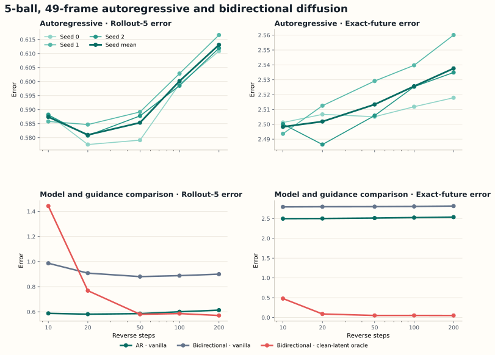
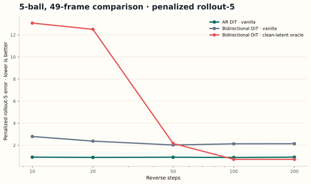
Watch the same sample across methods
Choose a sample and a reverse-step count. Play, pause, and step through all five videos together. Every clip has 49 frames; playback follows the same frame position.
Loading the comparison…
Case 2 at 50 steps. Rollout-1 guidance produces missing, wrong-color, and extra balls. The stricter validity checks in “All metrics” score 19 of 220 ball/frame pairs.
Scores below each video use the repository’s original Rollout-5 and Rollout-1 metrics for the selected sample, seed 0. The plots above summarize the full holdout set across seeds 0–2.
Data behind the figures
Download the autoregressive results and the bidirectional evaluations used for penalized rollout-5.
03 / Rollout guidance
Both guides improve a tuned Case 2 generation. In the earlier five-video tests, every tested variant worsens both mean errors. Below, we compare results that share the same vanilla controls and identify the settings that differed.
Every result in this section uses this video setting. Rollout-1 and Rollout-5 name the physics horizon used to build the guidance target. We evaluate the finished videos with both original repository metrics; lower is better. Ball-validity counts are separate.
Same Case 2 generation ↓Same five-video controls ↓Tests without a matching comparison ↓
Comparison 1 · Single-video tuning
Both guides improve both original metrics on Case 2. The tuned Rollout-1 result has lower errors than the saved cap-50 Rollout-5 result. All three clips share the single-video tuning experiment’s vanilla control.
Shared settings: seed 0, 50 denoising steps, guidance at step indices 25–49, and up to 50 latent updates per active step. Both guides apply direct gradient updates without checking and undoing proposals.
00000/828.mp4 · 50 denoising steps · seed 0 · single-video tuning
Scorable Rollout-5 pairs: 55/220
Scorable Rollout-5 pairs: 220/220
Scorable Rollout-5 pairs: 204/220
Loading the three videos…
| Setting | Rollout-1 guidance | Rollout-5 guidance |
|---|---|---|
| Guidance strength | 0.70 → 0.20; final step set to 0.10 | 0.20 → 0.06 |
| How this output was selected | Lowest original errors among 21 final-batch variants | Selected for visual quality during the sweep; original Rollout-5 later measured 7.2% below vanilla |
| Tests on more videos with these settings | None | None |
The strengths were tuned separately. This comparison shows what the two saved configurations achieved on one generation; changing the guidance horizon was not the only difference. Only two final videos survive from the 60-run Rollout-5 sweep, so the original metric cannot rank all 60 settings.
How Rollout-1 guidance is calculated →Rollout-1 settings ↓Rollout-5 clip metrics ↓Ground-truth video ↗
Comparison 2 · Earlier five-video tests
The Rollout-1 pilot and all six late Rollout-5 variants reuse the same five vanilla videos, verified by file hashes. They share seed 0, 50 denoising steps, guidance at step indices 40–49, and up to 12 accepted updates per step. Each proposal tries strengths 0.1, 0.03, 0.01, and 0.003.
Every tested variant raises both mean errors. Vanilla scores 0.4253 on Rollout-1 and 1.4163 on Rollout-5. The Rollout-1 pilot scores 0.4332 / 1.5004; the Rollout-5 variants score 0.4522–0.4922 / 1.4540–1.5192.
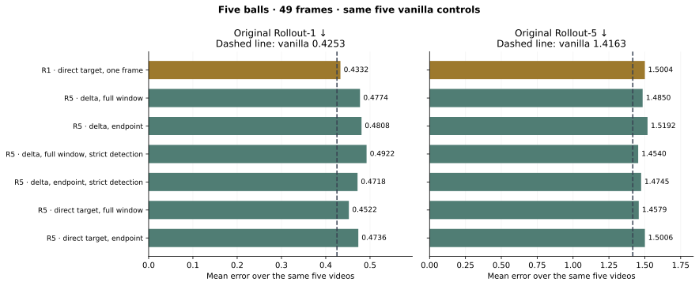
| Choice | Rollout-1 pilot | Rollout-5 variants |
|---|---|---|
| Frames used for each update | Choose the frame to update with the largest current error | Combine losses from all five-frame windows for which ball positions and velocities can be estimated |
| Target | Encode a reference with one frame replaced by a one-step physics prediction | Encode a five-step physics reference, or use the latent change caused by that reference |
| Where the loss is measured | Latent slice for the chosen frame | Whole five-frame window or its endpoint |
| Ball detection | Earlier detector | Several detector versions; strict detection rejects windows starting from a frame with an extra ball |
These pilots accept an update only when their guidance score improves. The Case 2 runs above instead use direct updates and select the smallest error above a threshold. The two experiment stages therefore test different procedures.
In the plot, “direct target” means the encoded physics reference. “Delta” subtracts the change caused by encoding and decoding the current video. The separate ball-validity counts were produced by different tracker versions, so we compare the common original metrics here. Download the shared settings and each run’s configuration.
Additional evidence · Same video setting
The following experiments also use five balls and 49 frames. They test update budgets, more videos, or alternative targets, but do not provide a matched Rollout-1 versus Rollout-5 comparison.
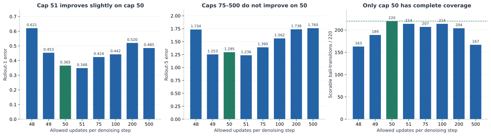
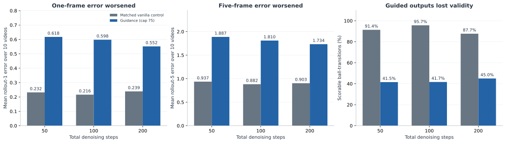
For five balls and 49 frames, the initial physics-derived targets barely change original Rollout-5. The exact-future oracle lowers it by 34.92%.
| Latent correction | Original Rollout-5 improvement |
|---|---|
| Random correction of matched size | +0.16% |
| Encoded five-step physics target | +0.08% |
| Latent change caused by the physics target | +0.12% |
| Exact-future oracle | +34.92% |
896 videos per seed, seeds 0–2; percent improvements averaged over 50, 100, and 200 denoising steps. Positive values mean lower error. These initial physics targets use the evaluation’s exact initial state; the oracle uses the correct future. No corresponding Rollout-1 target was tested in this holdout experiment. Download this video setting’s data.
A matched test would change only the physics horizon, keeping the videos, starting noise, update rule, strength schedule, and update budget fixed. The saved experiments provide shared-control comparisons, but do not make that single change.
The archives document all tested settings. The full Rollout-5 report also includes other ball counts and video lengths; the comparison above is restricted to five balls and 49 frames. All videos shown here are saved experiment outputs.
04 / State diffusion
We retrained the billiards experiment from scratch on positions and velocities instead of video. The gap between one-pass and block-by-block generation reproduces at 1/30 of the parameters, with no VAE and no tracker anywhere in the loop.
The seriality-gap paper’s released checkpoints generate pixels, so every number they produce passes through a VAE encoder, a VAE decoder, and a ball tracker. Those stages carry their own error, and it is not separable from the model’s: the repository’s own check puts the local-error floor of that pipeline at 0.19 world units, which is close to the 1-ball values the paper reports. These models predict the state directly and the metric is exact to about 1e-6, so nothing is hidden under a floor. The datasets were also rebuilt: every clip comes from its own independent simulation, where the paper’s generator takes up to 1,000 overlapping clips from each of about twenty simulations, making dataset diversity a hidden variable along the clip-length axis the experiment measures. “The paper” below means the seriality-gap paper, not SSH. Source: experiments/statebench/RETRAIN_REPORT.md.
5 balls, held-out clip 0 · open video ↗
5 balls, held-out clip 1 · open video ↗
5 balls, held-out clip 2 · open video ↗
5 balls, held-out clip 3 · open video ↗
Checkpoints and settings for these clips: JSON ↓
1 ball, held-out clip 0 · open video ↗
1 ball, held-out clip 1 · open video ↗
1 ball, held-out clip 2 · open video ↗
1 ball, held-out clip 3 · open video ↗
Checkpoints and settings for these clips: JSON ↓
2 balls, held-out clip 0 · open video ↗
2 balls, held-out clip 1 · open video ↗
2 balls, held-out clip 2 · open video ↗
2 balls, held-out clip 3 · open video ↗
Checkpoints and settings for these clips: JSON ↓
3 balls, held-out clip 0 · open video ↗
3 balls, held-out clip 1 · open video ↗
3 balls, held-out clip 2 · open video ↗
3 balls, held-out clip 3 · open video ↗
Checkpoints and settings for these clips: JSON ↓
Balls of radius 0.7 collide elastically in a 10 × 10 box at 15 frames per second. The model sees only numbers: 49 frames × 5 balls × (x, y, vx, vy) = 980 values per clip. No pixels, no VAE, no tracker. It is a small transformer with one token per (frame, ball), 8 layers, width 256, 6.85M parameters, trained with flow matching.
Each dataset is built by the paper’s own generator: 400 frames simulated per seed, the first 200 discarded as burn-in, at most one accepted window kept per seed. Initial conditions, solver, window filters, collision-density limits, and the held-out collision-count quotas are the original code, unchanged.
| Set, every cell | Clips | Independent simulations |
|---|---|---|
| Training | 20,000 | 20,000 |
| Held-out | 1,024 | 1,024 |
The burn-in keeps the state distribution equal to the original data’s. First-frame ball speeds, 5 balls at 49 frames:
| Quantile | 5% | 25% | 50% | 75% | 95% |
|---|---|---|---|---|---|
| This data | 2.28 | 5.32 | 8.04 | 10.90 | 14.66 |
| Original data | 2.27 | 5.30 | 8.01 | 10.88 | 14.66 |
Without the burn-in every clip would start from a freshly sampled initial condition, where 100% of ball speeds lie in [8, 10] against 18% in equilibrated data. Held-out sets keep the original repository’s balancing across ball-ball collision counts; one ball has no ball-ball collisions and no balancing.
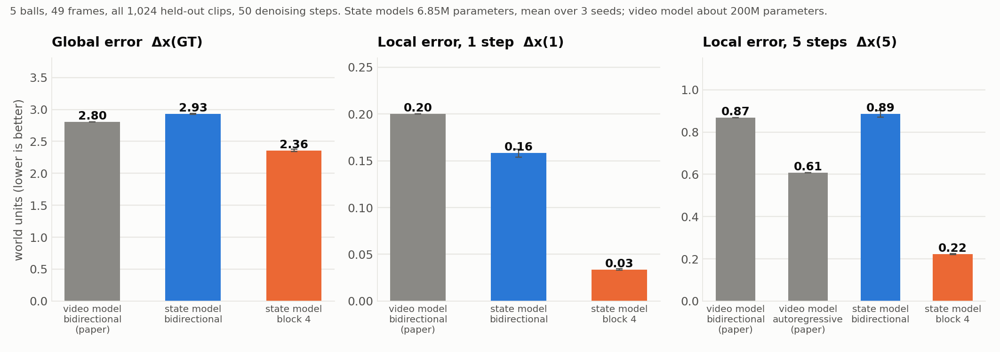
Global error Δx(GT) is the mean distance between generated and true ball centres over frames 5 to 48. Local error Δx(k) runs the exact simulator k frames forward from the generated frame t−k and compares it with the generated frame t, with velocities read off the generated positions by the paper’s finite-difference estimator.
The bidirectional model reaches 0.885 on the five-step local error. The block-4 model — the paper’s autoregressive scheme applied to states, 4 frames generated per block, earlier frames held fixed — reaches 0.223, four times more physically accurate, and also has the lower global error.
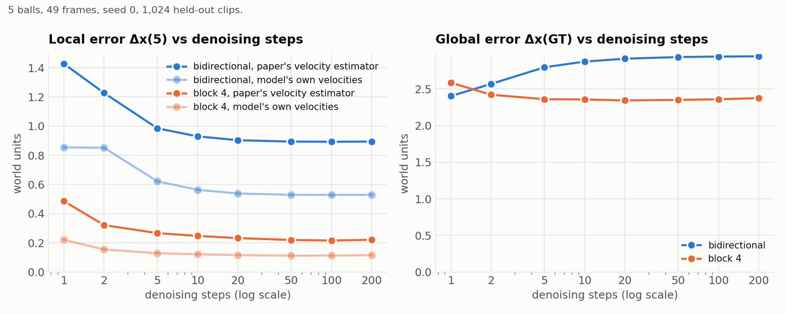
Left: the local error falls until about 20 steps and is flat from 20 to 200, the paper’s Observation 4. No number of denoising steps brings the bidirectional model near the block-4 model.
Right: the bidirectional model’s global error is lowest at 1 step and rises with more steps. One step returns roughly the conditional mean of all futures consistent with the given frames — close to the truth on average, but not a physically consistent trajectory. The global error therefore does not measure physical accuracy; the local error does.
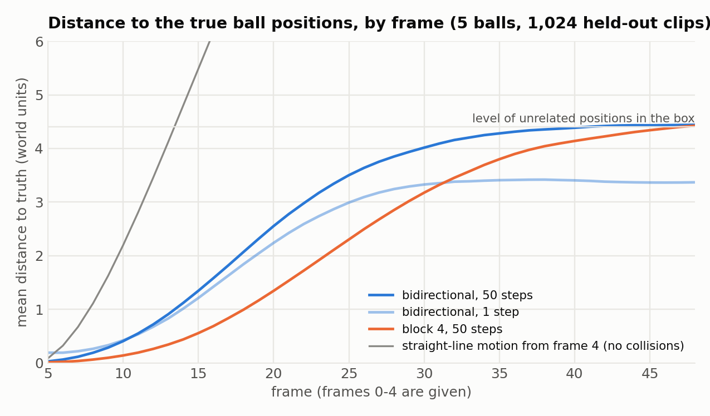
The bidirectional model is accurate at the first generated frame and drifts to the level of unrelated positions in the box by about frame 30.
The 1-step curve lies below the 50-step curve, which looks backwards but is expected. One denoising step returns a blend of trajectories rather than any one of them; being the mean, it minimises squared distance to the truth while being physically wrong. Fifty steps return one physically consistent sample, and because the dynamics are chaotic a single valid future ends up as far from the true one as any other valid future.
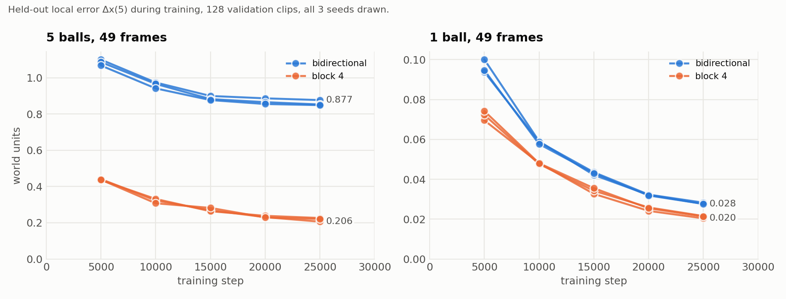
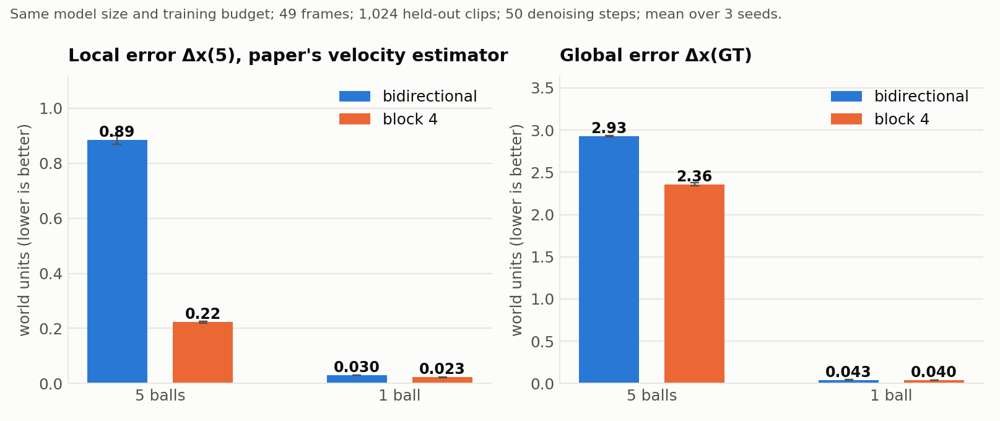
The paper’s control removes the serial structure. Both models become far more accurate, and — the substantive point — the two architectures become nearly equal: 0.0300 bidirectional against 0.0229 block-4 at 49 frames, a ratio of 1.31. Global error agrees: 0.0434 against 0.0399.
That matches the paper’s Observation 2, which reports 0.246 and 0.220 for its two video models at one ball and 49 frames, a ratio of 1.12. The gap that exists at 5 balls does not exist at 1 ball.
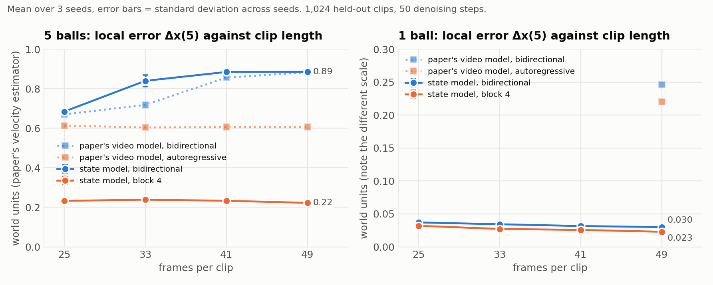
5 balls: the bidirectional model degrades with clip length, 0.684 at 25 frames to 0.885 at 49, tracking the paper’s video curve (0.670 to 0.883). The block-4 model is flat at 0.223 to 0.239, as the paper’s autoregressive video model is flat at about 0.61. Observations 1 and 3 reproduce, at 1/30 of the parameters.
1 ball: both models are flat, and so is the gap between them. The bidirectional model goes from 0.0371 at 25 frames to 0.0300 at 49 — slightly down, not up. Clip length by itself is not what hurts one-pass generation; dependent collisions are.
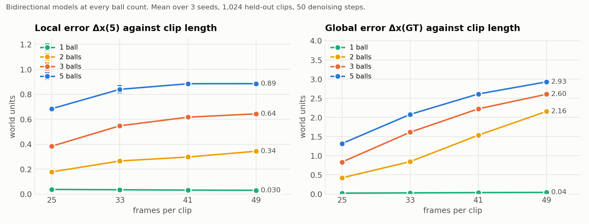
Local five-step error, bidirectional models, mean over 3 seeds with the standard deviation across seeds:
| Balls | 25 frames | 33 frames | 41 frames | 49 frames | 25 → 49 |
|---|---|---|---|---|---|
| 1 | 0.0371 ±0.0017 | 0.0343 ±0.0004 | 0.0316 ±0.0003 | 0.0300 ±0.0001 | 0.81× |
| 2 | 0.1774 ±0.0030 | 0.2653 ±0.0043 | 0.2970 ±0.0120 | 0.3433 ±0.0081 | 1.94× |
| 3 | 0.3833 ±0.0184 | 0.5474 ±0.0160 | 0.6164 ±0.0145 | 0.6432 ±0.0086 | 1.68× |
| 5 | 0.6841 ±0.0095 | 0.8396 ±0.0291 | 0.8846 ±0.0156 | 0.8851 ±0.0156 | 1.29× |
Block-4 models, with the bidirectional-to-block-4 ratio in parentheses. The gap grows with clip length at 5 balls and is flat at 1 ball:
| Balls | 25 frames | 33 frames | 41 frames | 49 frames |
|---|---|---|---|---|
| 1 | 0.0320 ±0.0007 (1.16×) | 0.0272 ±0.0004 (1.26×) | 0.0258 ±0.0013 (1.23×) | 0.0229 ±0.0005 (1.31×) |
| 5 | 0.2326 ±0.0044 (2.94×) | 0.2388 ±0.0028 (3.52×) | 0.2332 ±0.0049 (3.79×) | 0.2226 ±0.0026 (3.98×) |
Total score RMSE from the score-error audit run on these checkpoints: 25,000-step weights, 1,024 held-out clips, 32 uniform noise levels, 8 noise draws, float32 with TF32 disabled. “Generated frames” is clip length minus the 5 conditioning frames.
| Balls | 20 generated frames | 28 | 36 | 44 |
|---|---|---|---|---|
| 1 | 19.13 ±0.60 | 23.15 ±0.22 | 25.91 ±0.53 | 27.91 ±0.47 |
| 2 | 52.50 ±0.34 | 62.81 ±0.56 | 71.35 ±0.77 | 77.59 ±0.07 |
| 3 | 65.56 ±0.59 | 80.99 ±0.68 | 91.72 ±0.33 | 98.15 ±0.43 |
| 5 | 87.68 ±1.24 | 103.28 ±2.02 | 112.24 ±2.10 | 120.39 ±1.17 |
The same audit, as mean squared score error per predicted number:
| Balls | 20 generated frames | 28 | 36 | 44 |
|---|---|---|---|---|
| 1 | 4.575 | 4.783 | 4.664 | 4.426 |
| 2 | 17.229 | 17.616 | 17.680 | 17.103 |
| 3 | 17.912 | 19.522 | 19.474 | 18.247 |
| 5 | 19.223 | 19.051 | 17.501 | 16.471 |
Per-number score error is flat or slightly declining with length at every ball count, one ball included. The total grows only because there are more numbers to predict. From 20 to 44 generated frames the output grows by a factor of 2.2, so a flat per-number error predicts √2.2 = 1.48× growth in the total; measured growth is 1.46× at 1 ball, 1.50× at 3 balls, and 1.37× at 5 balls.
This matters for the audit’s question. A total score error that grows as the square root of the output size, with no increase per number, is what a model whose per-number score error is fixed and positive produces on a larger output. It is not evidence of a length-dependent breakdown in score accuracy.
Denoising-step budgets of 1, 2, 4, 8, 16, 32, 64, and 128, shared initial-noise seed, all 1,024 held-out clips. Best mean local error over all tested budgets:
| Balls | 20 generated frames | 28 | 36 | 44 |
|---|---|---|---|---|
| 1 | 0.0338 | 0.0297 | 0.0273 | 0.0256 |
| 2 | 0.1755 | 0.2524 | 0.2972 | 0.3351 |
| 3 | 0.3895 | 0.5398 | 0.6252 | 0.6288 |
| 5 | 0.6837 | 0.8311 | 0.8926 | 0.8927 |
A successful global prediction has mean position error at most 0.1 world units; a successful local prediction has five-frame physics error at most 0.05. The 1-ball models meet both thresholds at a fixed budget that does not grow with length: 2 steps for the global criterion at every length, and 32 steps for the stricter local criterion at 28, 36, and 44 generated frames. The 20-frame case needs 128 steps for the local criterion, the one place a shorter clip is harder — its best mean local error, 0.0338, is also the worst of the four. No multi-ball cell reaches 90% on either criterion at any tested budget, and adding steps does not fix it.
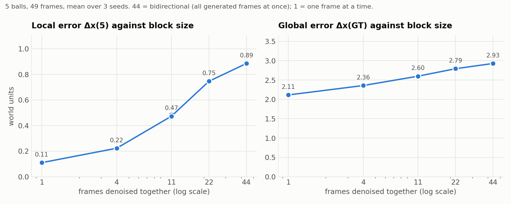
| Frames per block | Local error Δx(5) | Global error Δx(GT) |
|---|---|---|
| 44 (bidirectional) | 0.8851 ±0.0156 | 2.928 |
| 22 | 0.7459 ±0.0158 | 2.793 |
| 11 | 0.4730 ±0.0214 | 2.600 |
| 4 | 0.2226 ±0.0026 | 2.358 |
| 1 | 0.1100 ±0.0044 | 2.115 |
Both metrics fall monotonically as blocks get finer — the paper’s Observation 3, with a much wider spread than in pixel space, where its models span 0.88 down to 0.61. Block-causal models are cheaper at inference than the bidirectional one only when blocks are large: block 1 costs 44 times as many model calls at the same number of denoising steps.
Block 1 also shows the step saturation: 0.401 at 1 denoising step, 0.133 at 5, 0.116 at 20, 0.115 at 50.
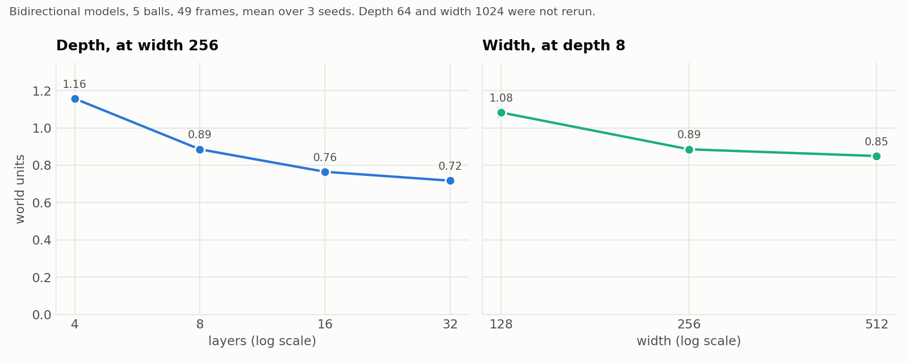
| Depth at width 256 | Local error | Width at depth 8 | Local error |
|---|---|---|---|
| 4 | 1.1566 ±0.0171 | 128 | 1.0824 ±0.0233 |
| 8 | 0.8851 ±0.0156 | 256 | 0.8851 ±0.0156 |
| 16 | 0.7646 ±0.0055 | 512 | 0.8492 ±0.0117 |
| 32 | 0.7171 ±0.0109 | — | — |
Depth gains keep coming to 32 layers but flatten (0.885 to 0.765 to 0.717), while width saturates almost immediately (0.885 to 0.849 for a 4× parameter increase). Depth buys more than width per parameter, the paper’s Observation 5.
No bidirectional model of any size tested approaches the block-4 model’s 0.223, let alone block 1’s 0.110. More layers do not substitute for generating in order.
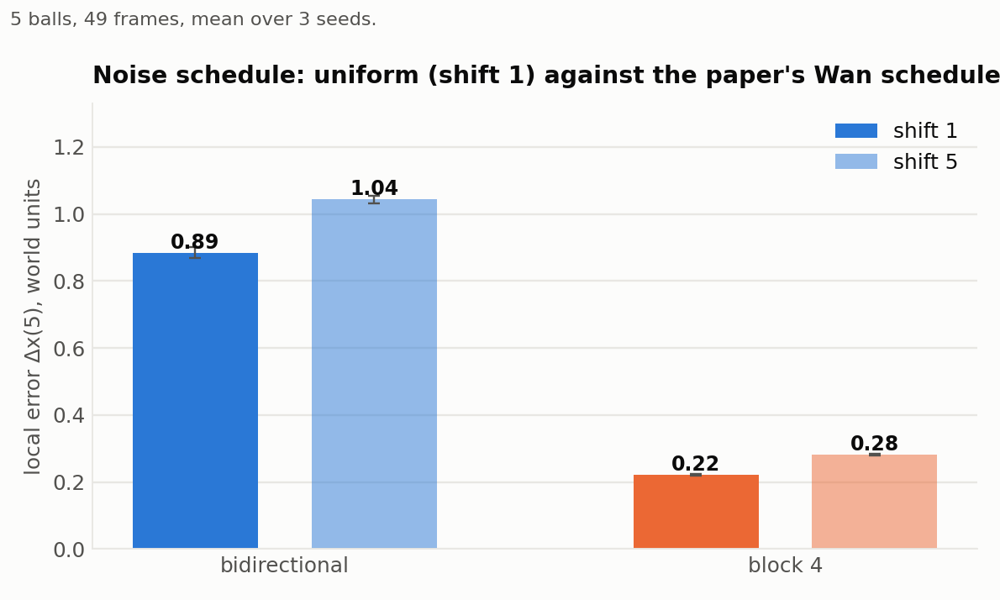
| Model | Shift 1 | Shift 5 |
|---|---|---|
| Bidirectional | 0.8851 ±0.0156 | 1.0442 ±0.0115 |
| Block 4 | 0.2226 ±0.0026 | 0.2828 ±0.0023 |
Shift 5 makes both models worse and leaves the ordering and the size of the gap unchanged (3.98× against 3.69×). The schedule choice is not what produces the results above.
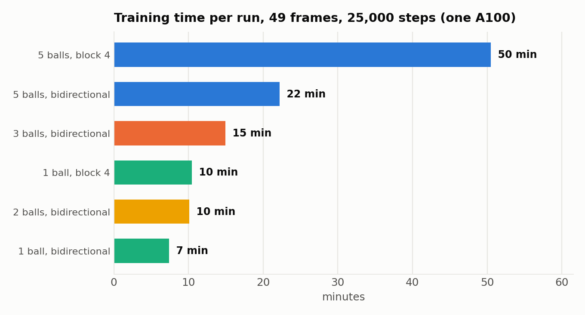
7 minutes for 1-ball bidirectional, 22 minutes for 5-ball bidirectional, 10 and 50 minutes for the corresponding block-4 models. Block-causal training is slower because the paper’s scheme doubles the sequence and needs an explicit attention mask, which prevents the fused attention kernel; at one ball the sequence is short enough that this costs almost nothing.
The original repository balances each held-out set across ball-ball collision counts. Under one clip per simulation, the rarest bin must be found by rejection sampling rather than harvested from a single collision-heavy simulation, and the cost varies enormously by cell.
The collision-count distribution has a geometric tail, so a short sample predicts the rare bins. 24,000 fresh simulations for the 2-ball 49-frame cell, 82 seconds on 8 cores:
| Ball-ball collisions | 4 | 5 | 6 | 7 | 8 |
|---|---|---|---|---|---|
| Accepted clips | 6,719 | 1,094 | 129 | 20 | 4 |
Consecutive ratios are near-constant at 0.140. Fitting on the well-populated bins and extrapolating:
| Collisions | Predicted rate | Simulations for a 171-clip bin |
|---|---|---|
| 7 | 7.5e-4 | 227,000 |
| 8 | 1.1e-4 | 1.6M |
| 9 | 1.5e-5 | 11.5M |
Checked against the live build: the model predicts about 119 clips in the 9-collision bin after 8.0M simulations; the build had about 100. Roughly 20% accurate, from 82 seconds of sampling.
A single-rate Poisson process would have a factorial tail, falling off much faster than this. A constant ratio is what a Poisson mixture gives: mixing over a Gamma-distributed rate yields a negative binomial, whose tail is geometric. Physically that fits, since how often two balls meet depends on their configuration, so the collision rate varies between simulations. This is an inference from the shape, not verified against the simulator.
| Cell | Simulations | Wall time |
|---|---|---|
| Any 1-ball cell | ~24,000 | 13 s |
| 5-ball, 49 frames | 23,000 | 4 min |
| 3-ball, 49 frames | 314,000 | 21 min |
| 2-ball, 41 frames | 1.0M | 33 min |
| 2-ball, 49 frames | ~11M | ~2.5 h |
Practical rule: before building a balanced cell, run about 25,000 simulations, fit the ratio on the bins with good counts, and extrapolate. A 6,000-simulation smoke test whose rarest bin has a single observation gives an unusable estimate.
Scope and data
102 training runs: bidirectional at 1, 2, 3, and 5 balls and block-4 at 1 and 5 balls, each at 25, 33, 41, and 49 frames with three seeds. 48 score audits, 48 sampling sweeps, and 384 physics evaluations on the bidirectional checkpoints. All 16 datasets rebuilt and validated. A further 30 runs cover the block-size, depth, width, and noise-schedule sweeps at 5 balls and 49 frames. Not rerun: depth 64 and width 1024, the two most expensive families, and the memorisation gates.
One row per training run: global error, one-step local error, and five-step local error at 50 denoising steps, read from each run’s saved evaluation. These are the numbers behind the horizon, ball-count, block-size, depth, width, and schedule results above. The score-error and sampling-accuracy tables come from the separate score-error audit.
04.5 / Score-error audit · side path
A side path off the main sequence: instead of measuring generated trajectories, we measure the models’ score itself against the exact score, which the simulator makes available. Summed over a trajectory the error grows with clip length. Per state component it is flat. The theorem’s low-score-error assumption is exactly the per-component error shrinking like 1/√d, and that shrinkage is absent at every ball count.
This audits the same state models as section 04, at their 25,000-update checkpoints. A state component is one ball’s x position, y position, horizontal velocity, or vertical velocity in one frame; a clip of B balls and F future frames has \(d=4BF\) of them. Network evaluations run in float32 with TF32 disabled; squared residuals and their sums accumulate in float64. The noise levels 0.001, 0.003 and 0.01 are separate diagnostics and are excluded from every primary average. Source: experiments/score-error-audit/REPORT.md.
The exact score is available because the conditioning frames determine one future and the noise we add has a known distribution. The simulator supplies that future; differentiating the Gaussian log density gives the score. The simulator is never differentiated.
Each held-out clip stores the simulator’s positions and velocities for every ball at every frame. The first five frames are the conditioning, \(c\). With the simulation parameters fixed, they determine one future, \(y^*(c)\), holding \(d=4BF\) state components. Positions are centred at 5 and divided by 2.5, velocities divided by 6.25; every score below is with respect to these standardized variables.
We draw independent standard Gaussian noise for those \(d\) numbers and form a noisy future, leaving the five conditioning frames clean:
Because \(y^*(c)\) is fixed once \(c\) is given, the noisy future is Gaussian with a known mean and variance, \(p_\sigma(z\mid c)=\mathcal N\!\left(z;(1-\sigma)y^*(c),\sigma^2 I_d\right)\). Differentiating its log density with respect to \(z\) gives the score, and at the sample we just built it collapses to the noise we drew:
This exactness depends on one future per conditioning. If the same conditioning allowed several futures, the noisy distribution would be a mixture and one example’s noise would not give its score.
These networks were trained with flow matching: they predict \(\hat v_\theta(z_\sigma,c,\sigma)\) against the target \(v^*=\epsilon-y^*(c)\). Under this noise convention the score implied by a predicted flow, and its error, are
So the audit computes the squared score error straight from the flow residual, which is algebraically the same as building both score vectors and subtracting. Only the \(F\) future frames enter the sum. Each noisy input costs one network evaluation; the separate sampling experiment runs the full denoising loop instead.
For each trained model we evaluate 1,024 held-out clips at the 32 levels \(\sigma_k=(k+1/2)/32\), with eight independent noise draws per clip reused across levels. Score error for the full trajectory sums the squared errors over all \(d\) state components, averages over clips, draws and levels, then takes the square root. Score error per state component averages over the \(d\) components as well before the square root, so it is the first divided by \(\sqrt d\):
Both take a square root; their only difference is whether squared errors are summed or averaged over components. Tables and frame-count curves average \(E_r\) or \(R_r\) across the three training seeds, with error bars showing the standard deviation across seeds. Noise-level plots use one level per point. The full-trajectory number uses the same unnormalized L2 norm as the assumption it tests.
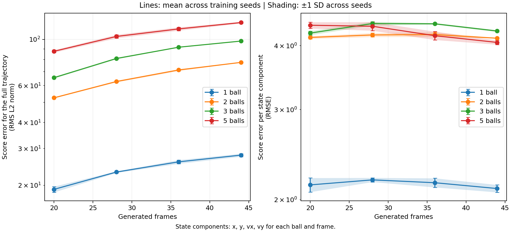
From 20 to 44 generated frames, the total changes by 1.46× at one ball, 1.48× at two, 1.50× at three and 1.37× at five. The per-component error changes by 0.98×, 1.00×, 1.01× and 0.93× over the same range.
| Balls | Generated frames | Seeds | Full trajectory (RMS L2) | Per state component (RMSE) |
|---|---|---|---|---|
| 1 | 20 | 3 | 19.13 | 2.138 |
| 1 | 28 | 3 | 23.15 | 2.187 |
| 1 | 36 | 3 | 25.91 | 2.159 |
| 1 | 44 | 3 | 27.91 | 2.104 |
| 2 | 20 | 3 | 52.50 | 4.151 |
| 2 | 28 | 3 | 62.81 | 4.197 |
| 2 | 36 | 3 | 71.35 | 4.205 |
| 2 | 44 | 3 | 77.59 | 4.136 |
| 3 | 20 | 3 | 65.56 | 4.232 |
| 3 | 28 | 3 | 80.99 | 4.418 |
| 3 | 36 | 3 | 91.72 | 4.413 |
| 3 | 44 | 3 | 98.15 | 4.272 |
| 5 | 20 | 3 | 87.68 | 4.384 |
| 5 | 28 | 3 | 103.28 | 4.364 |
| 5 | 36 | 3 | 112.24 | 4.183 |
| 5 | 44 | 3 | 120.39 | 4.058 |
Means over 3 training seeds. Download the score summary, which also carries the per-seed values and the per-component figure as score_rmse_per_component.
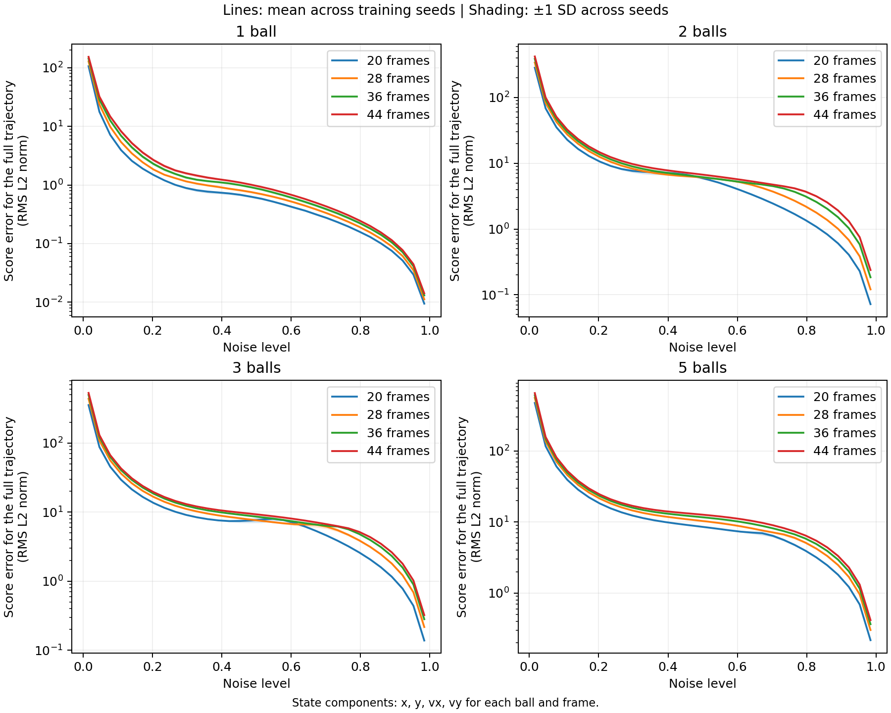
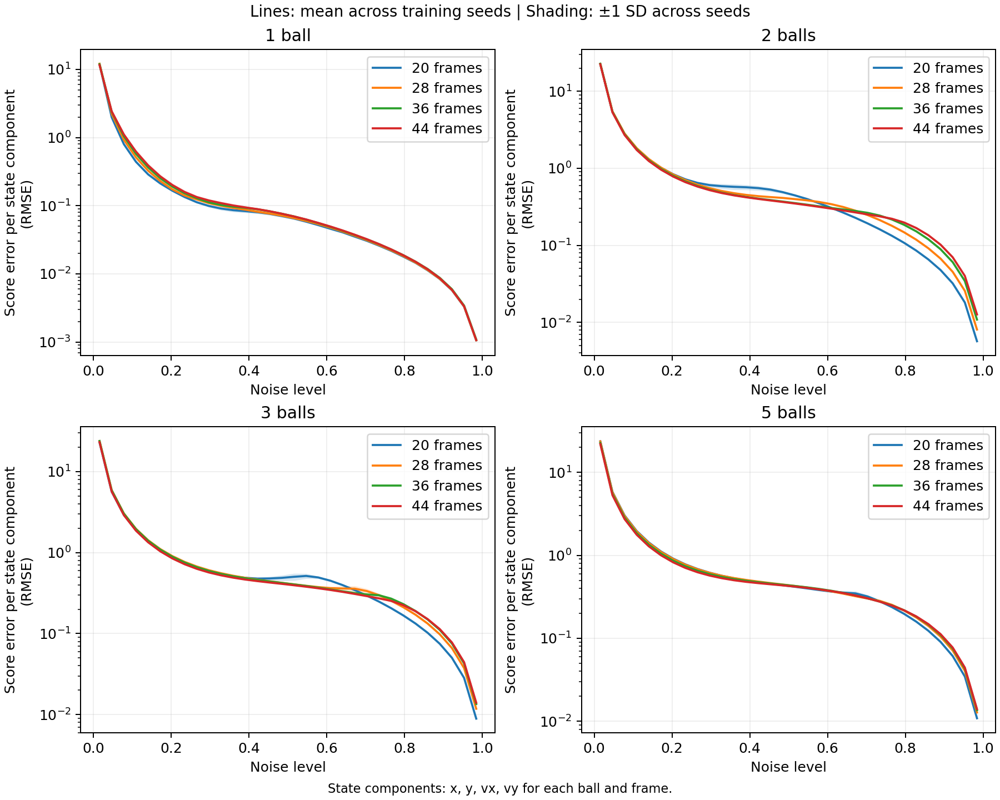
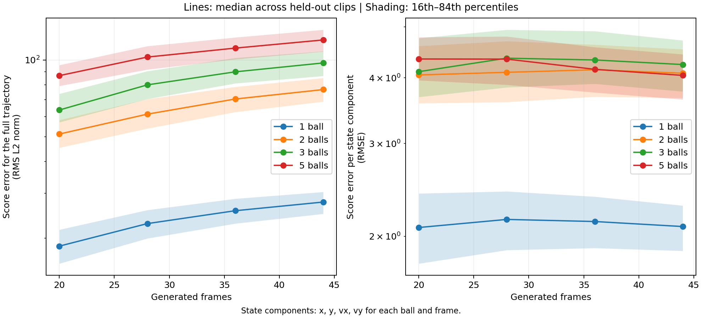
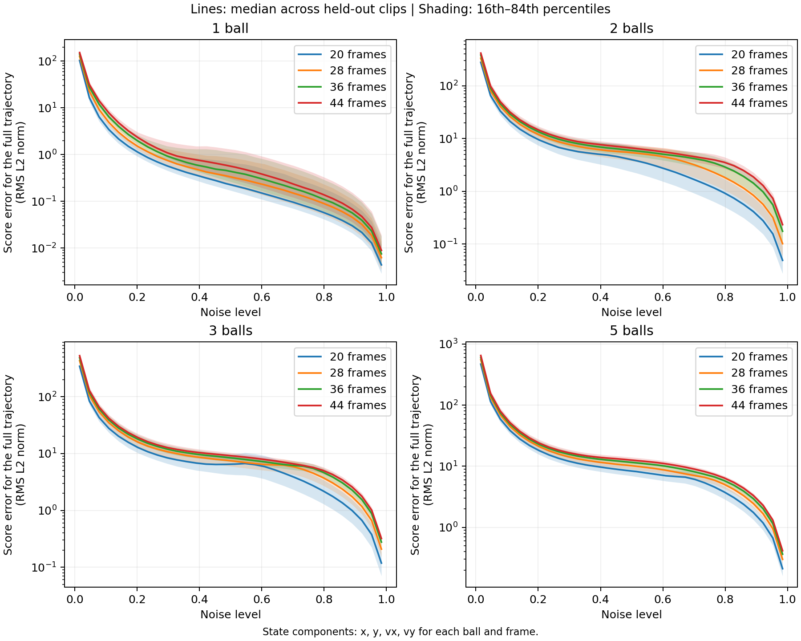
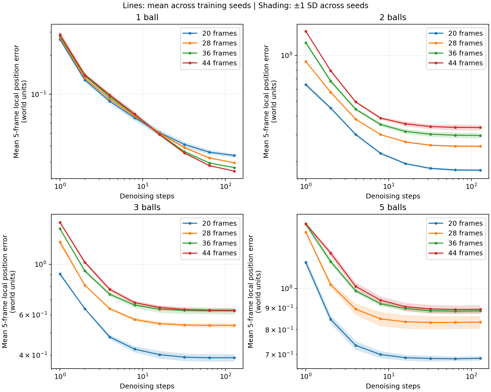
A successful global prediction has mean position error at most 0.1 world units; a successful local prediction has five-frame physics error at most 0.05. Success fractions are averaged across seeds, and the table gives the smallest tested budget at which at least 90% of clips pass. “None” means no tested budget reaches that.
| Balls | Generated frames | Steps for global success | Steps for local success | Best mean local error |
|---|---|---|---|---|
| 1 | 20 | 2 | 128 | 0.0338 |
| 1 | 28 | 2 | 32 | 0.0297 |
| 1 | 36 | 2 | 32 | 0.0273 |
| 1 | 44 | 2 | 32 | 0.0256 |
| 2 | 20 | None | None | 0.1755 |
| 2 | 28 | None | None | 0.2525 |
| 2 | 36 | None | None | 0.2972 |
| 2 | 44 | None | None | 0.3353 |
| 3 | 20 | None | None | 0.3895 |
| 3 | 28 | None | None | 0.5398 |
| 3 | 36 | None | None | 0.6254 |
| 3 | 44 | None | None | 0.6293 |
| 5 | 20 | None | None | 0.6840 |
| 5 | 28 | None | None | 0.8318 |
| 5 | 36 | None | None | 0.8848 |
| 5 | 44 | None | None | 0.8927 |
The 1-ball, 20-frame cell needing 128 steps for the local threshold while 28, 36 and 44 frames need 32 runs opposite to a length-based account, and is unexplained. Download the sampling summary.
Every clip comes from its own simulation: 400 frames simulated per seed, the first 200 discarded as burn-in, at most one accepted window kept. The original generator supplies the initial conditions, solver, window filters, collision-density limits and the held-out collision-count balancing; training and evaluation use disjoint simulation seeds. Each training set holds 20,000 clips from 20,000 simulations, each held-out set 1,024 from 1,024. Section 04 explains why this replaced the earlier datasets, which drew up to 1,000 overlapping clips from each of about twenty simulations.
| Balls | Generated frames | Training min | Training mean | Held-out min | Held-out max | Held-out mean |
|---|---|---|---|---|---|---|
| 1 | 20–44 | 0 | 0.00 | 0 | 0 | 0.00 |
| 2 | 20 | 2 | 2.17 | 2 | 3 | 2.50 |
| 2 | 44 | 4 | 4.18 | 4 | 9 | 6.50 |
| 3 | 20 | 2 | 2.69 | 2 | 4 | 3.00 |
| 3 | 44 | 5 | 5.68 | 5 | 13 | 8.99 |
| 5 | 20 | 4 | 6.53 | 4 | 8 | 6.00 |
| 5 | 44 | 8 | 13.95 | 8 | 22 | 14.98 |
Ball–ball collisions per clip, counted with the original generator’s frame-selection rule; the 28- and 36-frame rows fall between the two shown. The evaluation set balances the allowed collision counts. Download the full dataset validation record.
Sampling runs in bf16, so one shared noise draw per level compares bf16 inference against float32 at 49 frames. Both ran on the same GPU, an RTX PRO 6000 Blackwell in one Slurm job, so the first ratio isolates the dtype. The second re-runs the same float32 configuration on an A100, isolating the hardware.
| Balls | Seed | bf16 / float32, same GPU | float32 on Blackwell / float32 on A100 |
|---|---|---|---|
| 1 | 0 | 1.0214 | 1.0000 |
| 2 | 0 | 1.0169 | 1.0000 |
| 3 | 0 | 1.0116 | 1.0049 |
| 5 | 1 | 1.0201 | 0.9988 |
bf16 raises the total squared score error by 1.2 to 2.2 percent; moving the same float32 computation to different hardware changes it by at most 0.5 percent. Neither moves any number above enough to change a conclusion.
What the proofs establish. For deterministic prediction the exact conditional score contains the correct future: one score evaluation plus arithmetic recovers it, which is Seriality Gap, Proposition 4.1. Serial Scaling extends this to approximate scores under further assumptions; its error bound must stay small enough across input sizes, which with the other conditions gives a solver of constant circuit depth (Appendix F). Appendix F defers the score-error assumption itself to Li and Yan (2024), where it reads
The squared L2 norm runs over all \(d\) output coordinates with no \(1/d\) normalization, and the average is over timesteps only. In their Theorem 1 it enters the bound as \(c\,\varepsilon_{\mathsf{score}}\sqrt{\log T}\), linearly and with no \(\sqrt d\) factor. That is why we report the unnormalized total alongside the per-component figure: the total is the quantity the assumption bounds. Our average runs over 32 uniform noise levels under a flow-matching convention rather than their timestep grid, so our number is not a numerical evaluation of their \(\varepsilon_{\mathsf{score}}\).
This also says when accurate scores cannot come from a shallow network: if a task needs growing circuit depth, a fixed-depth network cannot keep satisfying the conditions. The theory therefore allows failure to learn accurate scores on hard tasks, and does not require first observing an accurate-score model and then watching it fail. What it does not do is bound the computational limits of an arbitrary inaccurate denoiser. This audit measures score accuracy; it does not read circuit depth off an error curve.
One ball collides only with walls, so its future is a closed-form function of the given state with no chain of dependent events. It is the paper’s control for the claim that clip length alone is not what hurts one-pass generation.
| 1-ball measurement | 20 generated frames | 44 generated frames |
|---|---|---|
| Paper: local physics error | 0.220 | 0.246 |
| Paper: distance from true trajectory | 0.310 | 1.417 |
| Our models: local physics error | 0.036 | 0.028 |
| Our models: distance from true trajectory | 0.024 | 0.044 |
| Our models: score error per predicted number | 4.575 | 4.426 |
The paper’s values come from its Table 2; its 25- and 49-frame clips include five conditioning frames. Our rows use the 25,000-update checkpoints, 64 denoising steps, and means across 3 training seeds.
Local physical consistency is flat, and slightly better on the longer clips. Score error per predicted number is flat. Distance from the true trajectory grows from 0.024 to 0.044 but stays two orders of magnitude below the box size: a marginally wrong velocity accumulates positional drift over a longer horizon even while the motion stays physically correct. The paper’s own 1-ball global error grows for the same reason, and by far more.
Two claims in the earlier state-diffusion write-up do not survive and are withdrawn. First, that single-ball wall bounces are a mild version of the same serial limitation: on these datasets block-causal generation beats one-pass generation by 1.16× to 1.31× at one ball, flat across the tested range, against 2.94× to 3.98× at five balls, and the paper’s two video models differ by 1.12× in the same comparison. Second, that the paper’s flat 1-ball curve sits on a VAE-and-tracker measurement floor of 0.19: no floor needs to be invoked, because the pixel models and the state models agree.
From 20 to 44 generated frames the output grows by 2.2×, so a flat per-number error predicts √2.2 = 1.48× growth in the total. Measured: 1.46× at one ball, 1.48× at two, 1.50× at three, 1.37× at five. A total that grows as the square root of output size, with no increase per number, is what a model with a fixed positive per-number error produces on a larger output: if that error settles at any constant \(a\), the total is \(\sqrt{4BF}\,a\), which grows without limit as \(F\) increases.
Holding the total bounded would require the per-number error to shrink like \(1/\sqrt d\). Over a 2.2× growth in output, \(\sqrt d\) grows by 1.48, so the per-number error would have to fall to 0.67× to keep the total fixed. Measured instead:
| Balls | Per number, 20 frames | Per number, 44 frames | Observed change | Needed for a fixed total |
|---|---|---|---|---|
| 1 | 2.138 | 2.104 | 0.98× | 0.67× |
| 2 | 4.151 | 4.136 | 1.00× | 0.67× |
| 3 | 4.232 | 4.272 | 1.01× | 0.67× |
| 5 | 4.384 | 4.058 | 0.93× | 0.67× |
No ball count comes close, and the one-ball case is the most informative: there the task has a closed-form solution, the model learned it — physical accuracy is flat and slightly improving with length — and the per-number score error is flat. That is about as favourable as this setting gets, and the total still grows as √d, because flat per-number error and a growing output force it to.
So the growing total is not evidence that score accuracy breaks down as the requested future lengthens. It shows that the assumption, stated as a bound on an unnormalized sum over a growing number of coordinates, would require a model to become more accurate at each individual number as more numbers are asked of it. We see no sign of that and no reason to expect it. A separate structural point runs the same way: the first term of Li and Yan’s bound, \(c\,d\log^{3}T/T\), carries \(d\) whatever the score error is, so even an exact score would need the step count \(T\) to grow roughly linearly in \(d\) to hold that term at a fixed target. We have not examined how Appendix F treats this.
The assumption is not that the score error is small in this experiment. It is that one constant works for every input size: there exists some \(C\), fixed once and for all, with \(\varepsilon_{\mathsf{score}}(d)\le C\) for every output size \(d\). That is a claim about infinitely many sizes. We measured four.
Four measurements cannot show the assumption fails. A sequence can rise and still be bounded — it might climb towards a ceiling and never pass it. These totals could level off at 60 generated frames, or at 600, and the assumption would hold.
They also cannot show it holds. Four numbers have a largest value, so they are trivially bounded by it, and “bounded over the range we tested” is true of any finite set of measurements.
The question becomes testable through the exact identity between the two quantities in this section. Writing \(a(d)\) for the error per state component, \(\varepsilon_{\mathsf{score}}(d)=\sqrt d\,a(d)\), so
The assumption is therefore exactly the per-component error shrinking at least as fast as \(1/\sqrt d\) — the same claim rewritten, not a weaker version — and that is a trend we can measure. What we measure is that \(a(d)\) does not shrink at all: over a 2.2-fold increase in \(d\) it stays within 7% of where it started, at every ball count, where a 33% drop would have been needed.
The totals say the same from the other side. Fitting \(\log\varepsilon_{\mathsf{score}}=\text{const}+p\log F\):
| Balls | Totals at 20, 28, 36, 44 generated frames | Exponent \(p\) |
|---|---|---|
| 1 | 19.1, 23.1, 25.9, 27.9 | 0.482 |
| 2 | 52.5, 62.8, 71.4, 77.6 | 0.499 |
| 3 | 65.6, 81.0, 91.7, 98.2 | 0.518 |
| 5 | 87.7, 103.3, 112.2, 120.4 | 0.399 |
The largest residual is 0.021 in log space. The exponents sit at 0.40 to 0.52, so over this range the growth is the pure √d rate that flat per-component error forces, with no sign of flattening. The successive slopes drift down slightly, and that is accounted for by the small decline in per-component error — the 5-ball models have both the lowest exponent and the largest per-component decline — rather than by approaching a ceiling.
The honest conclusion. We have not refuted the assumption and do not claim to. What we can say is sharper than “unsupported”: the assumption is equivalent to a specific measurable trend, we measured that trend, and it is absent. For the assumption to hold, per-component accuracy would have to start improving as the model is asked for more output, somewhere past 44 generated frames, having been flat throughout the range we tested. We know of no mechanism that would produce that. One further constraint is easy to lose sight of: the theorem needs \(\varepsilon_{\mathsf{score}}\) not merely bounded but small enough for the accuracy target, so a large constant would not rescue the argument. Boundedness is the weaker of the two requirements, and it is the one already not in evidence.
Converting a predicted flow to a score multiplies the flow error by \((1-\sigma)/\sigma\), which is large when \(\sigma\) is small. The lowest primary level, \(\sigma=1/64\), contributes 94 to 97 percent of the total squared score error at one ball and 91 to 92 percent at two, three and five balls, at every frame count. Because of that weighting, the headline averages could hide behaviour at moderate noise, so we recompute per predicted number over \(\sigma\ge0.1\) only:
| Balls | 20 generated frames | 44 generated frames | Change |
|---|---|---|---|
| 1 | 0.1242 | 0.1641 | 1.32× |
| 2 | 0.6044 | 0.5566 | 0.92× |
| 3 | 0.6345 | 0.6065 | 0.96× |
| 5 | 0.6448 | 0.5937 | 0.92× |
At moderate and high noise the multi-ball models are flat or slightly improving, and the 1-ball models show a residual 1.32× rise with length. Two things about that number matter. It is small in absolute terms — the 1-ball error stays four times below every multi-ball value, so the model that grows is the accurate one. And it is far from the earlier models’ behaviour, where the same restricted measurement rose by roughly 24× across the same range. We report it rather than average it away, and we have no explanation for it.
With \(z_\sigma=(1-\sigma)y+\sigma\epsilon\) and \(y\) the true standardized future, the clean-state estimate from the same network call is \(\hat y=z_\sigma-\sigma\hat v_\sigma\), and its error relates to the score error by
For \(0<\sigma<1\) a large score error at low noise can correspond to a small error in the reconstructed clean state. Reconstruction from a noisy true future is a denoising measurement; ordinary generation starts from pure noise plus the conditioning frames. The two answer different questions, so aggregate score error and generation error need not change in proportion.
The Seriality Gap paper’s central evidence is a pattern across clip lengths: with five balls, one-pass generation gets worse as clips get longer while generating in order does not, and with one ball neither gets worse and the two are close. We reproduce the pattern. Five-frame physics error, 25-frame clips to 49-frame clips:
| Model | Paper | This work |
|---|---|---|
| 5 balls, one-pass | 0.670 to 0.883 | 0.684 to 0.885 |
| 5 balls, in order | 0.613 to 0.607 | 0.233 to 0.223 |
| 1 ball, one-pass | 0.220 to 0.246 | 0.037 to 0.030 |
| 1 ball, in order | 0.220 at 49 frames | 0.032 to 0.023 |
What the audit adds is that these models do not satisfy the assumption the depth argument rests on. The theorem that limits one-pass diffusion to constant depth requires an accurate score. Ours is not accurate at any ball count, by the measurements above. So the degradation we observe falls outside the theorem’s reach and cannot be attributed to it. A plainer explanation covers the same observations: the model does not learn an accurate score for long multi-ball futures. That is a learning failure, and in these metrics it is indistinguishable from a depth barrier.
Across the grid, score accuracy and generation quality coincide exactly. One ball is the only case where the score error per state component is small, roughly a quarter of the multi-ball values, and it is also the only case where quality holds up with length and where the two architectures are close. Every cell that degrades is a cell whose score is poor.
The theory itself allows this, which is why the ambiguity is hard to remove. A fixed-depth network asked for a task needing growing depth should fail to learn accurate scores, so a rising score error is what the theory predicts on such a task. But a model that is too small, trained too briefly, or facing a task that is merely hard also has a rising score error. Score error alone cannot tell them apart, and neither can generation quality, because both explanations predict the same degradation. What would separate them is a multi-ball setting where the score is known to be accurate, so a failure could not be blamed on score quality. Two routes are in the open questions below.
At one ball, on a task with a closed-form solution, these models keep both their physical accuracy and their per-number score accuracy as the requested future grows, and one-pass generation is nearly as good as generating in order. At two or more balls, physical accuracy degrades with length and generating in order is markedly better, while per-number score accuracy stays flat. No tested denoising-step budget up to 128 fixes the multi-ball case. No model at any ball count satisfies the low-score-error assumption: the total rises with output size in every case, and the per-component decay that boundedness requires is absent.
What this does not establish: that score error is unbounded as length grows without limit, since four lengths were tested; that the models satisfy the remaining conditions of the approximate-score theorem, which we do not measure; that any observed error curve implies a particular circuit depth; or that the multi-ball degradation is caused by a depth limitation rather than by the model failing to learn an accurate score. The last is the main interpretive limit of this audit.
Scope and data
48 score audits — 4 ball counts × 4 frame counts × 3 seeds — and 384 physics evaluations, all complete. Each audit is 1,024 held-out clips × 32 primary noise levels × 8 noise draws, one network evaluation per noisy input.
The per-seed score and sampling numbers, the per-clip spread statistics, and the dataset validation record.
05 / State-space guidance
One gradient step toward a physics target at every denoising step. In state space the guides that failed in pixels now work — they lower every error of the bidirectional model — but they shift the whole length curve down rather than flattening it. Guidance built from physics laws alone, plus restart sampling, does flatten it, and still lands above the block-4 model.
Every number here is on the 896 holdout clips — the 1,024 held-out clips minus 128 kept for calibration — as the mean ± standard deviation over 3 training seeds, using the retrained bidirectional state models from the previous section at 25,000 updates. Guidance strength is selected per (frames, steps, guide) on the calibration clips; the selected value is 1 in every main-grid cell except three 20-step cells, where it is 0.3. Source: experiments/statebench-guidance/REPORT.md.
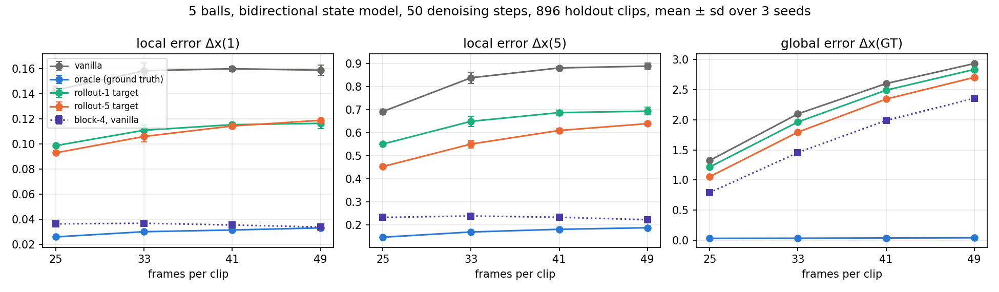
| Δx(5), local error | 25f | 33f | 41f | 49f | 25→49 |
|---|---|---|---|---|---|
| bidirectional, vanilla | 0.691 ±0.011 | 0.838 ±0.025 | 0.880 ±0.006 | 0.888 ±0.014 | 1.28× |
| bidirectional, rollout-1 target | 0.550 ±0.005 | 0.649 ±0.023 | 0.687 ±0.011 | 0.693 ±0.017 | 1.26× |
| bidirectional, rollout-5 target | 0.453 ±0.008 | 0.550 ±0.017 | 0.609 ±0.008 | 0.639 ±0.009 | 1.41× |
| bidirectional, oracle | 0.147 ±0.005 | 0.170 ±0.007 | 0.181 ±0.006 | 0.188 ±0.002 | 1.28× |
| block-4, vanilla | 0.233 ±0.004 | 0.239 ±0.002 | 0.233 ±0.004 | 0.223 ±0.002 | 0.96× |
| Δx(1), local error | 25f | 33f | 41f | 49f | 25→49 |
|---|---|---|---|---|---|
| bidirectional, vanilla | 0.143 ±0.003 | 0.158 ±0.006 | 0.160 ±0.002 | 0.159 ±0.004 | 1.11× |
| bidirectional, rollout-1 target | 0.099 ±0.001 | 0.111 ±0.004 | 0.115 ±0.002 | 0.116 ±0.004 | 1.18× |
| bidirectional, rollout-5 target | 0.093 ±0.002 | 0.106 ±0.004 | 0.114 ±0.002 | 0.119 ±0.001 | 1.28× |
| bidirectional, oracle | 0.026 ±0.001 | 0.030 ±0.001 | 0.031 ±0.001 | 0.033 ±0.000 | 1.28× |
| block-4, vanilla | 0.036 ±0.001 | 0.037 ±0.000 | 0.035 ±0.001 | 0.034 ±0.001 | 0.93× |
| Δx(GT), global error | 25f | 33f | 41f | 49f | 25→49 |
|---|---|---|---|---|---|
| bidirectional, vanilla | 1.325 ±0.008 | 2.098 ±0.014 | 2.602 ±0.014 | 2.934 ±0.012 | 2.21× |
| bidirectional, rollout-1 target | 1.218 ±0.005 | 1.965 ±0.026 | 2.492 ±0.006 | 2.836 ±0.010 | 2.33× |
| bidirectional, rollout-5 target | 1.056 ±0.013 | 1.795 ±0.023 | 2.343 ±0.010 | 2.704 ±0.013 | 2.56× |
| bidirectional, oracle | 0.032 ±0.001 | 0.034 ±0.001 | 0.038 ±0.002 | 0.042 ±0.001 | 1.31× |
| block-4, vanilla | 0.792 ±0.008 | 1.455 ±0.008 | 1.988 ±0.013 | 2.358 ±0.017 | 2.98× |
In pixel space the same targets gave changes within ±2%, which the rollout-guidance section above documents. Here rollout-5 guidance lowers Δx(5) by 28% at 49 frames and 34% at 25 frames, and improves 84–87% of individual holdout clips when paired on the same initial noise. The pixel-space failure was a tracking problem, not a property of the guidance idea: with exact states there is nothing to detect.
The 25→49 growth of Δx(5) is 1.28× unguided, 1.26× with rollout-1 and 1.41× with rollout-5. The growth of the global error is unchanged or slightly steeper, 2.21× against 2.33–2.56×. Guidance shifts the whole curve down by a roughly constant factor. The block-4 model is flat at 0.96× and still 2.9× more accurate than the best guided bidirectional model at 49 frames.
0.119 against 0.116 at 49 frames, and it improves Δx(5) and Δx(GT) more. The five-frame target carries more information about where the ball should be than the one-frame target, whose source frame is itself only one frame away from the target.
The oracle receives the true future states. It is a positive control: it shows how far one gradient step per denoising step can move the sample. At 50 steps it takes the global error from 2.93 to 0.04 and the five-step local error from 0.888 to 0.188, below the block-4 model's 0.223. It also gains from more steps, which vanilla sampling does not:
| Δx(5) at 49 frames | 20 steps | 50 steps | 100 steps |
|---|---|---|---|
| vanilla | 0.900 | 0.888 | 0.886 |
| rollout-1 target | 0.766 | 0.693 | 0.687 |
| rollout-5 target | 0.699 | 0.639 | 0.622 |
| oracle | 0.390 | 0.188 | 0.123 |
At 100 steps the oracle's 25→49 growth is 1.08×. This matches the pixel-space clean-latent oracle, which also kept improving with steps while vanilla sampling did not. The guided steps are an iterative fit to a supplied answer; they do not compute the answer.
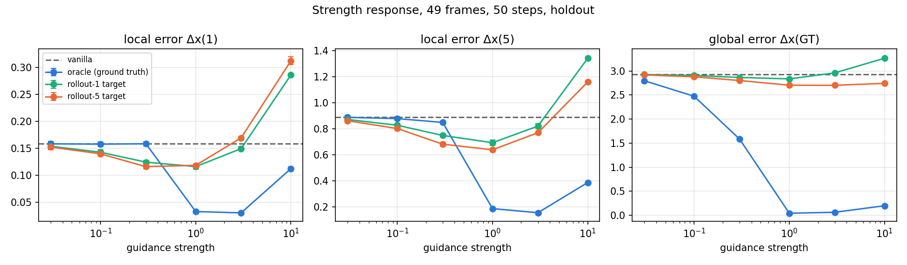
Below 0.3 the rollout guides do little; at 3 they start to hurt Δx(1); at 10 every guide is worse than no guidance on the local errors, the oracle included. The optimum is 1 for all three targets, and the same value is selected at every clip length and step count from 50 steps upward.
One change at a time from the main grid, 49 frames and 50 steps, with strength re-selected on the calibration clips.
| Variant | rollout-1: Δx(1) / Δx(5) | rollout-5: Δx(1) / Δx(5) | oracle: Δx(5) / Δx(GT) |
|---|---|---|---|
| main grid | 0.116 / 0.693 | 0.119 / 0.639 | 0.188 / 0.042 |
| source velocities from the paper's estimator instead of the model's | 0.113 / 0.661 | 0.120 / 0.611 | — |
| positions only in the loss | 0.113 / 0.735 | 0.133 / 0.744 | 0.448 / 0.090 |
| guidance only in the second half of the steps | 0.140 / 0.807 | 0.141 / 0.806 | 0.427 / 0.180 |
| gradient without the model Jacobian | 0.118 / 0.751 | 0.149 / 0.768 | 0.122 / 0.027 |
Clip 112, the median vanilla Δx(5) · open video ↗
Clip 157, the largest rollout-5 improvement · open video ↗
Clip 69, the largest rollout-5 deterioration · open video ↗
Watching the trails shows what the metrics measure. The vanilla panel produces balls that turn in mid-flight, pass through each other and leave the wall at the wrong angle. Rollout-5 guidance removes many of these, so its trails look like a plausible billiard trajectory, but by the end of the clip the balls are nowhere near their true positions: a physically consistent future that starts from slightly different collisions diverges from the true one within about 20 frames. The oracle panel follows the truth panel almost exactly. Block 4 produces a consistent trajectory that is also a different one.
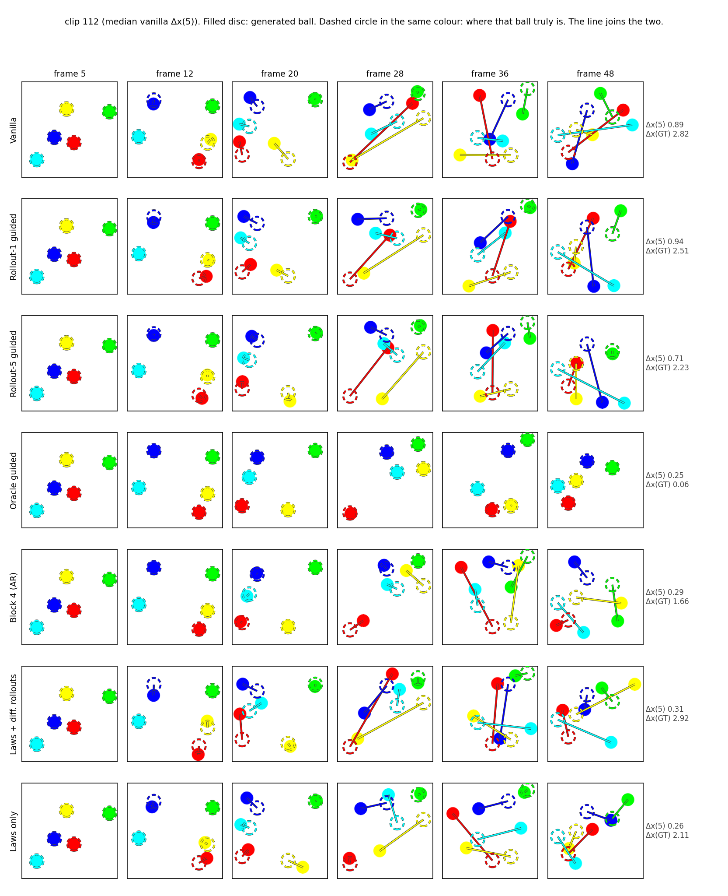
At frame 5 every method sits on the truth. By frame 20 the vanilla and both guided runs have visibly separated, and by frame 36 the lines are as long as the box. Only the oracle keeps every disc inside its dashed circle, which is why it has no visible lines. Guidance shortens these lines a little but does not stop them growing.
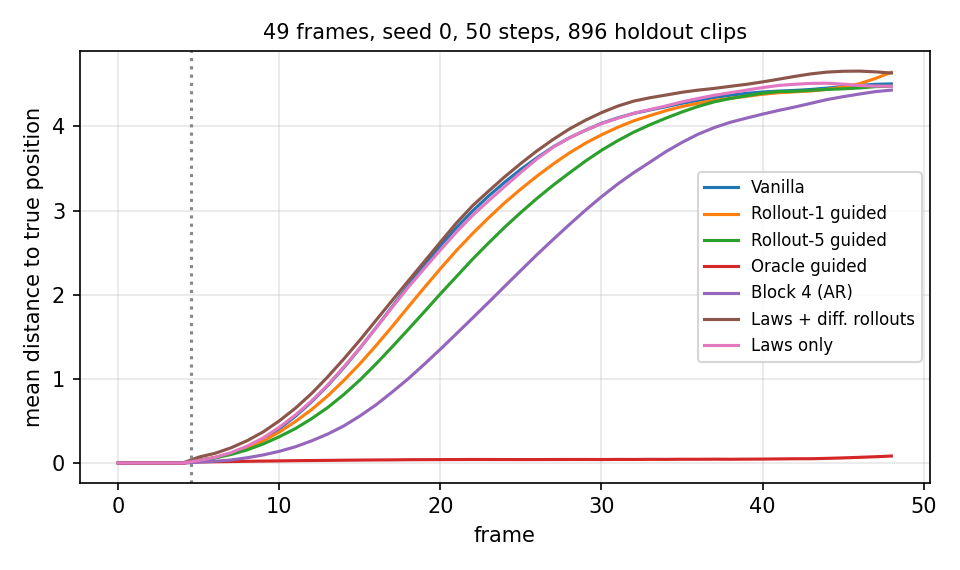
The paper's two metrics compare two points in time. These ask what the simulator says about a generated trajectory as a whole, on the same trajectories as Figure 18 at 50 steps and strength 1. They fall into three groups: what the model's own velocity channel says, what the simulator says about the generated positions, and how far the sample is from the truth.
“Event” everywhere means what the paper's simulator reports when run for one frame interval from the generated frame t−1 with the generated positions and velocities. Because the true clips are exact simulator snapshots, the ground truth scores zero on every violation measure, which checks the definitions.
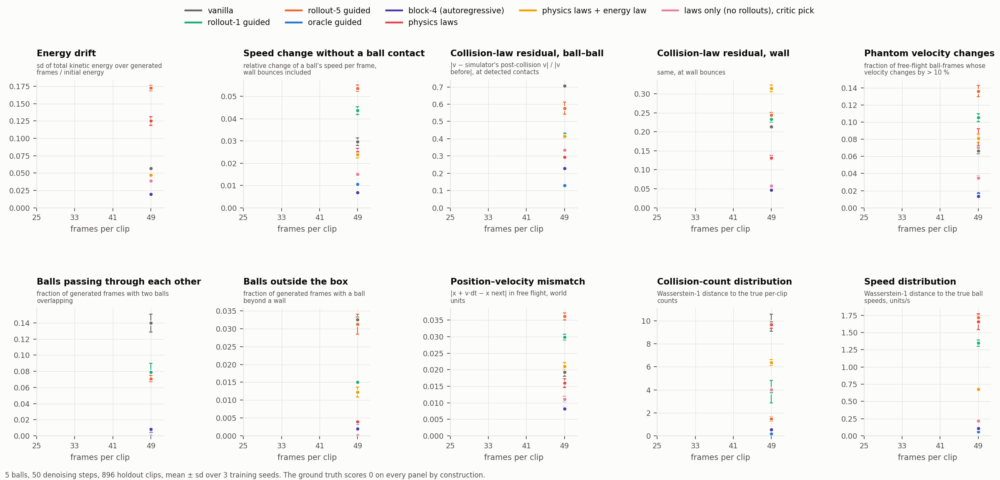
| 49 frames | ground truth | vanilla | rollout-1 | rollout-5 | oracle | block 4 |
|---|---|---|---|---|---|---|
| energy drift | 0.000 | 0.057 ±0.002 | 0.125 ±0.002 | 0.172 ±0.004 | 0.020 ±0.001 | 0.019 ±0.000 |
| speed change without ball contact | 0.000 | 0.030 ±0.002 | 0.044 ±0.002 | 0.054 ±0.001 | 0.011 ±0.001 | 0.007 ±0.000 |
| collision-law residual, ball–ball | 0.000 | 0.706 ±0.006 | 0.428 ±0.008 | 0.576 ±0.035 | 0.130 ±0.003 | 0.229 ±0.007 |
| collision-law residual, wall | 0.000 | 0.213 ±0.004 | 0.234 ±0.008 | 0.245 ±0.006 | 0.052 ±0.004 | 0.046 ±0.003 |
| phantom velocity-change rate | 0.000 | 0.067 ±0.004 | 0.105 ±0.005 | 0.136 ±0.007 | 0.017 ±0.000 | 0.014 ±0.000 |
| frames with overlapping balls | 0.000 | 0.140 ±0.011 | 0.079 ±0.011 | 0.071 ±0.004 | 0.004 ±0.001 | 0.008 ±0.001 |
| frames with a ball outside the box | 0.000 | 0.032 ±0.001 | 0.015 ±0.000 | 0.031 ±0.003 | 0.004 ±0.000 | 0.002 ±0.000 |
| position–velocity mismatch (units) | 0.000 | 0.019 ±0.001 | 0.030 ±0.001 | 0.036 ±0.001 | 0.011 ±0.000 | 0.008 ±0.000 |
| ball–ball collisions per clip | 15.1 | 25.0 | 18.9 | 15.4 | 15.1 | 14.7 |
| W1 distance, collision counts | 0.000 | 9.830 ±0.748 | 3.829 ±0.977 | 1.475 ±0.209 | 0.185 ±0.063 | 0.544 ±0.006 |
| W1 distance, speeds (units/s) | 0.000 | 0.231 ±0.004 | 1.345 ±0.043 | 1.715 ±0.034 | 0.060 ±0.001 | 0.109 ±0.016 |
| median frame of divergence from truth | 49 | 13 | 14 | 15 | 49 | 18 |
896 holdout clips, mean ± sd over 3 seeds. The Wasserstein-1 distance is the mean absolute difference between the quantile functions of the generated and true distributions.
On the position-based measures the guided models sit between vanilla and block 4: half as many overlapping frames, the ball–ball collision-law residual down from 0.71 to 0.43 with a rollout-1 target, and the collision-count distribution repaired — vanilla generates 25 collisions per clip against 15 in the data, and rollout-5 gives 15.4. On every velocity-based measure the guided models are worse than vanilla: energy drift 3×, phantom velocity changes 2×, speed-distribution distance 6×.
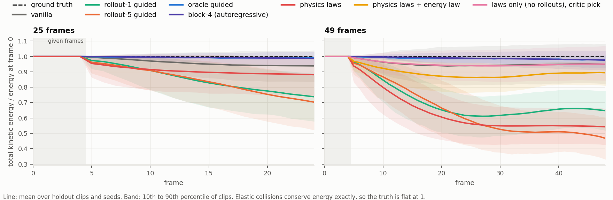
The rollout target's velocity at frame t is the simulator's velocity after running from the estimate's frame t−k. Early in sampling the estimate is a conditional mean whose velocities are averaged over many futures and therefore too small, and the target inherits and then enforces those small velocities. Neither local error catches this: the paper's re-estimates velocities from positions, and the generated-velocity variant only checks that a few frames are consistent with each other, which a trajectory that is too slow but self-consistent passes — both variants improve under rollout guidance. A conserved quantity tracked across the whole clip is what exposes it.
Vanilla's ball–ball collision-law residual is 0.71, meaning the velocity after a detected contact differs from the elastic-collision outcome by 71% of the incoming speed, against 0.13 for the oracle and 0.23 for block 4. Vanilla balls overlap in 14% of generated frames and leave the box in 3%; the oracle and block 4 do so in under 1%.
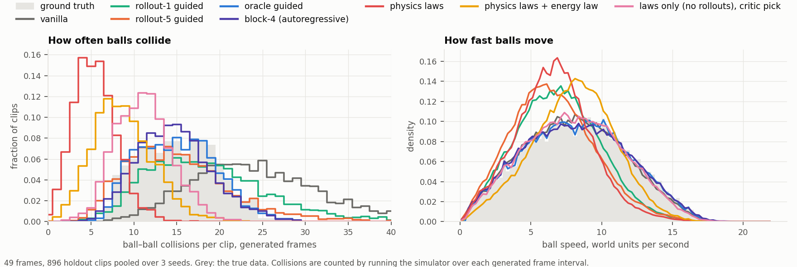
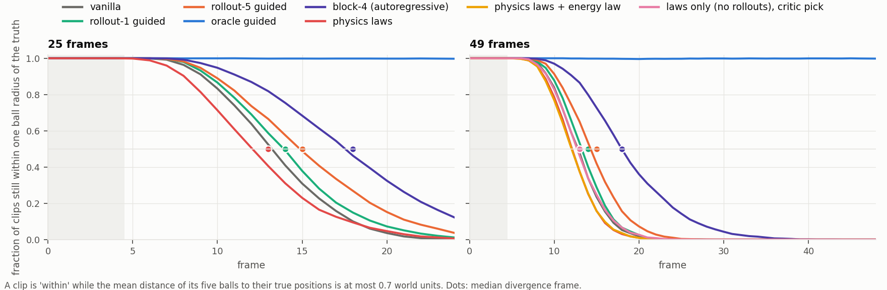
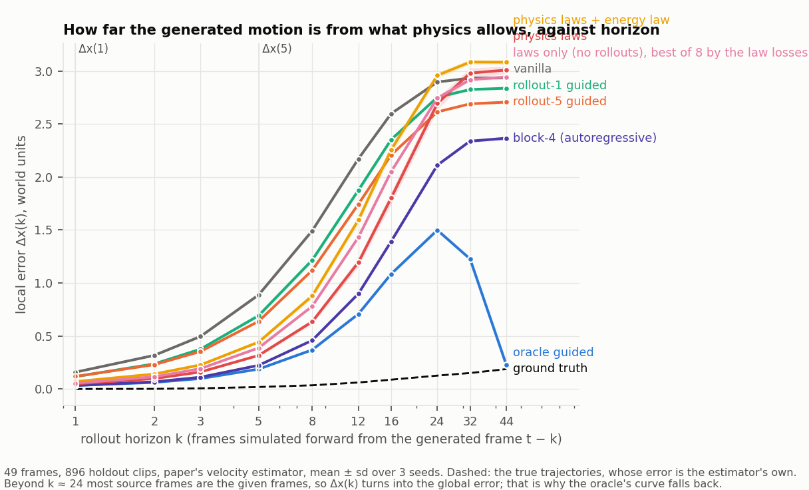
The measures above pick one physical quantity each. The complementary question is whether the generated clips, taken as whole objects, are distributed like true clips. Each clip's 44 generated frames are flattened into one vector — 440 position coordinates, 440 velocity coordinates, or both — in the model's standardized units, and compared with the truth three ways.
| 49 frames | ground truth | vanilla | rollout-1 | rollout-5 | oracle | block 4 |
|---|---|---|---|---|---|---|
| Fréchet distance, positions | 2.553 ±0.000 | 2.622 ±0.029 | 4.060 ±0.030 | 4.105 ±0.029 | 2.554 ±0.001 | 2.589 ±0.017 |
| Fréchet distance, velocities | 5.456 ±0.000 | 5.420 ±0.018 | 7.489 ±0.020 | 7.740 ±0.091 | 5.426 ±0.004 | 5.420 ±0.019 |
| Fréchet distance, both | 6.539 ±0.000 | 6.558 ±0.031 | 8.899 ±0.029 | 9.147 ±0.093 | 6.511 ±0.002 | 6.526 ±0.030 |
| Fréchet distance, both, top-32 PCs | 2.187 ±0.000 | 2.286 ±0.030 | 4.237 ±0.034 | 4.160 ±0.049 | 2.190 ±0.002 | 2.239 ±0.045 |
| sliced W2, positions | 0.0581 ±0.0002 | 0.0592 ±0.0017 | 0.0663 ±0.0013 | 0.0680 ±0.0023 | 0.0582 ±0.0003 | 0.0596 ±0.0005 |
| sliced W2, velocities | 0.0638 ±0.0006 | 0.0664 ±0.0004 | 0.1809 ±0.0034 | 0.2161 ±0.0029 | 0.0637 ±0.0005 | 0.0610 ±0.0009 |
| sliced W2, both | 0.0610 ±0.0004 | 0.0629 ±0.0003 | 0.1046 ±0.0017 | 0.1215 ±0.0025 | 0.0611 ±0.0004 | 0.0603 ±0.0006 |
| classifier accuracy, temporal CNN | 0.505 ±0.016 | 0.499 ±0.003 | 0.930 ±0.006 | 0.967 ±0.002 | 0.508 ±0.002 | 0.504 ±0.006 |
| classifier accuracy, gradient boosting | 0.514 ±0.004 | 0.545 ±0.010 | 0.931 ±0.003 | 0.967 ±0.004 | 0.512 ±0.003 | 0.509 ±0.004 |
| classifier accuracy, logistic regression | 0.511 ±0.006 | 0.500 ±0.011 | 0.542 ±0.016 | 0.534 ±0.005 | 0.505 ±0.003 | 0.496 ±0.007 |
Mean ± sd over 3 seeds, 49 frames. Distances in standardized units: positions divided by 2.5, velocities by 6.25.
Their Fréchet and sliced-W2 distances sit on the noise floor at every number of principal components, and the CNN and logistic regression score 50% against them. Gradient boosting reaches 54.5% on vanilla, the only trace of a signal. This is the same vanilla model that overlaps balls in 14% of its frames and collides 25 times per clip instead of 15. Those violations live in a few coordinates per frame — the distance between one pair of balls, the velocity jump at one contact — and change the marginal distribution of the 880 coordinates so little that a two-sample test on 896 clips does not see them.
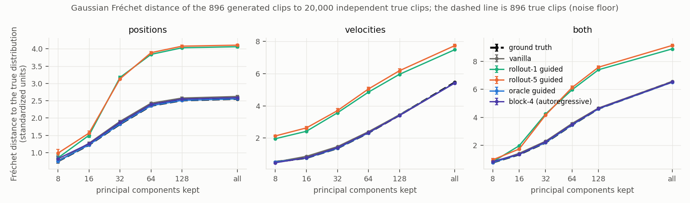
The CNN tells rollout-1 and rollout-5 clips from true ones with 93% and 97% accuracy; sliced W2 on velocities is 3× the floor and on positions 1.15×. Logistic regression stays near 54%, so the difference is not a shift in the mean trajectory but in its shape.
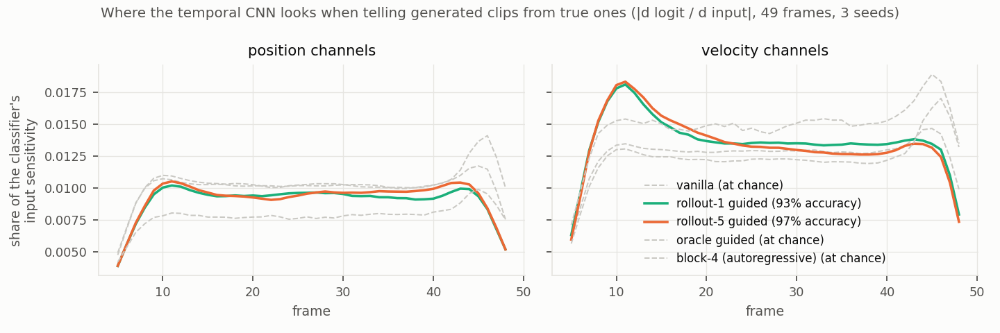
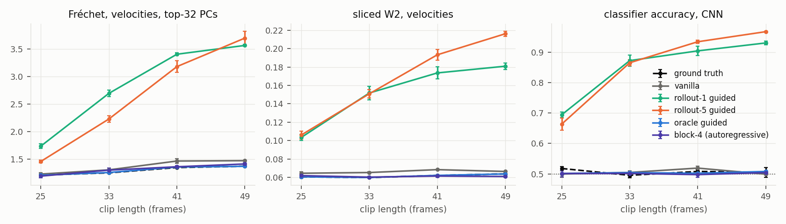
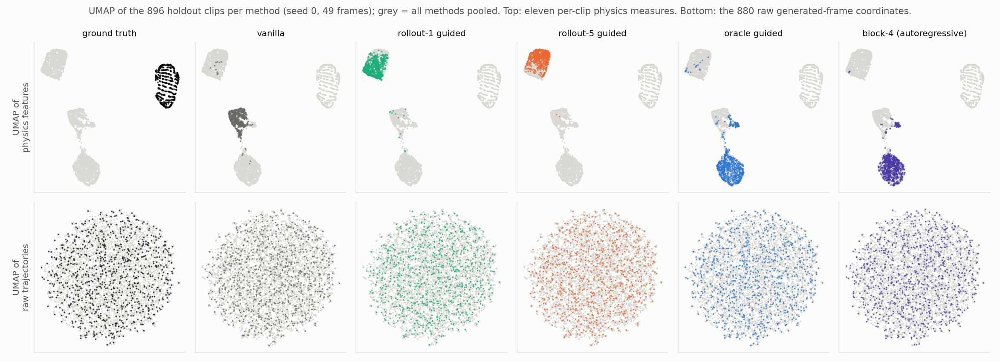
In physics-feature space there are three islands: the truth alone, since every violation measure is exactly zero for it; the two rollout-guided models, with their low final energy; and a third island where vanilla forms its own blob next to a shared oracle-and-block-4 blob. In raw-coordinate space every method is the same featureless cloud. That matches the table: the raw coordinates do not carry the physics violations that the simulator-based measures detect.
The whole-trajectory distances therefore add one thing — a clean confirmation that the rollout-guided velocity drift is a distribution-level defect — and miss everything else. Comparing generated trajectories as a distribution needs a feature space in which the violations are large, and for this task those features are the physical measures, not the coordinates.
The guidance above pushes the model toward a target it computes for itself by simulating forward. That lowers the error, but the error still grows as clips get longer. This part drops the target and guides with physics instead.
A law is an equation relating neighbouring frames that the true motion satisfies exactly: energy is conserved, a ball touching nothing travels in a straight line, a ball leaving a wall reflects, two balls never overlap, and no ball passes through another. The model is pushed toward satisfying these. Nothing simulates the motion forward, so this guidance never needs to know what happens next — only what any correct answer must look like.
Three law sets were tried, and they are named below by what they contain rather than by the order they were tried in.
Everything earlier in this section runs the denoising pass once, applies its correction once per step, and produces one clip. The law methods add three things: restarts, which partly re-noise the finished clip and denoise it again; a second model run per step, so the correction is applied twice; and repeated tries, where several clips are generated and one is kept. Each of the three lowers the error on its own, whatever the guidance is, so law results cannot be read against the earlier ones directly. This is what each method runs:
| Method | Restarts | Model runs per denoising step | Tries per clip (best kept) | Total model runs per clip |
|---|---|---|---|---|
| vanilla, rollout-1, rollout-5, oracle; block 4 | 0 | 1 | 1 | 50 |
| the same four with restarts (dashed in Figure 34) | 16 from σ 0.35 | 1 | 1 | 322 |
| laws with a simulator | 16 from σ 0.35 | 2 | 1 | 644 |
| rollout-5 given the same three settings, 49 frames only | 24 from σ 0.45 | 1 | 8 | 4,624 |
| geometry laws | 24 from σ 0.45 | 2 | 8 | 9,248 |
The last column multiplies the other three together, so it counts how many times the model runs to produce one clip. The law methods cost far more than the methods they were originally compared against, which is why the comparison further down gives every method the same three settings.
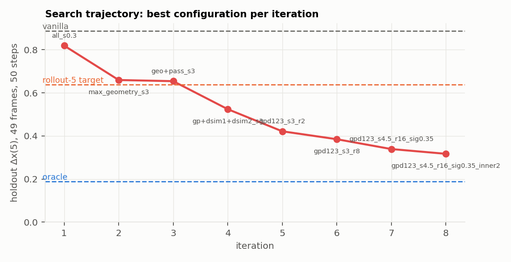
| 49 frames, 50 steps, holdout, 3 seeds | Δx(1) | Δx(5) | Δx(GT) |
|---|---|---|---|
| vanilla | 0.159 ±0.004 | 0.888 ±0.014 | 2.934 |
| rollout-1 target | 0.116 ±0.004 | 0.693 ±0.017 | 2.836 |
| rollout-5 target | 0.119 ±0.001 | 0.639 ±0.008 | 2.704 |
| oracle | 0.033 ±0.000 | 0.188 ±0.002 | 0.042 |
| rollout-5 target, 16 restarts | 0.099 ±0.003 | 0.531 ±0.011 | 2.548 |
| oracle, 16 restarts | 0.018 ±0.000 | 0.106 ±0.002 | 0.020 |
| block 4, vanilla | 0.034 ±0.001 | 0.223 ±0.002 | 2.358 |
| laws + differentiable rollouts 1–3, 16 restarts | 0.049 ±0.002 | 0.317 ±0.012 | 3.008 |
Three things made this work. Law gradients touch only a few numbers per frame, so each one needs its own size limit rather than a shared one — before that, every law made the result worse. Letting the gradient flow through a differentiable simulator beats comparing against a fixed simulated target, because it can also move the frame the simulation starts from. And restarts help.
Restarts help every method, though, not just this one, and they help the unguided model most of all, so they are not evidence that the laws are doing the work. Two further problems: this method still simulates forward, which is what the laws were meant to avoid, and its samples collide far less often than real ones.
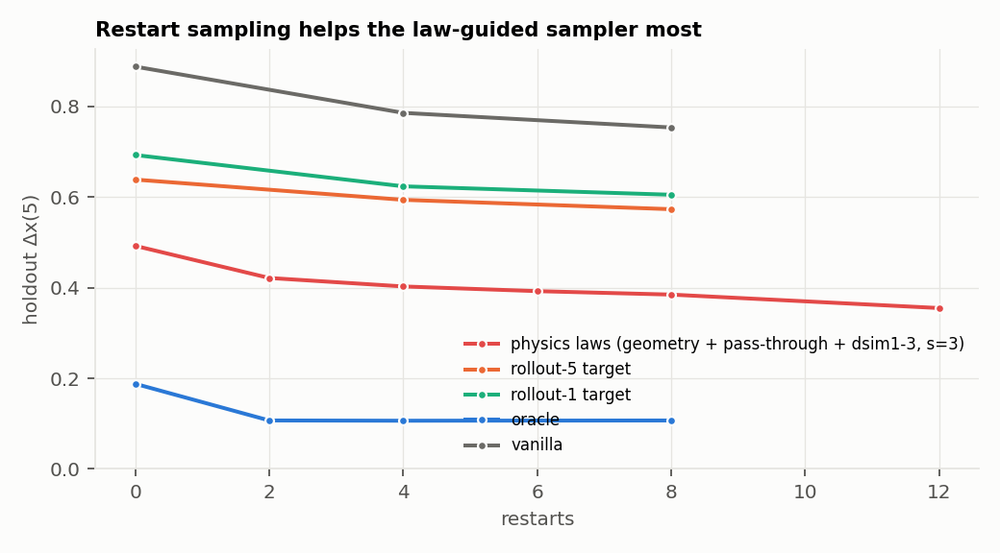
This set drops the simulator entirely and keeps only the geometry laws: no overlaps, no crossings, stay inside the box. Every law the first attempt had rejected was retried with restarts, five new laws were written, and the update rule was varied.
| 49 frames, 50 steps, holdout, 3 seeds | Δx(1) | Δx(5) | Δx(GT) | final energy |
|---|---|---|---|---|
| geometry laws, 4 restarts | 0.082 | 0.568 | 2.939 | 0.97 |
| geometry laws, 16 restarts, 2 inner corrections | 0.071 | 0.505 | 2.945 | 0.97 |
| geometry laws, 48 restarts, 2 inner corrections | 0.064 | 0.463 | 2.940 | 0.96 |
| geometry + faded late reflection, 24 restarts | 0.066 | 0.458 | 2.944 | 0.96 |
| the same, best of 8 candidates by the law critic | 0.055 ±0.000 | 0.388 ±0.002 | 2.941 | 0.95 |
| perfect pick of the same 8 (needs the simulator) | 0.046 | 0.315 | 2.913 | — |
| rollout-5 target, 24 restarts, best of 8 by the same critic | 0.082 ±0.002 | 0.449 ±0.009 | 2.536 | — |
| oracle, 16 restarts | 0.018 | 0.106 | 0.020 | — |
Measured against methods run without restarts or repeated tries, this set looked like a clear win. It is not: give the rollout target the same restarts and the same repeated tries and most of the apparent win disappears. The comparison below does that for every method.
This set has three parts, and only the first is guidance:
Laws written on velocities get satisfied in the wrong way. The model has a velocity channel that the error metric never reads, so it can satisfy a velocity law by editing those numbers, and it can satisfy a collision law by producing fewer collisions. Both make the law's own residual look better while the motion gets worse.
Laws written on positions have the opposite problem: they need a recognisable contact to act on, and a badly wrong sample does not contain one, so they go quiet exactly where they are needed. A straightness law that cannot be gamed at all still hurts, most likely because straightening an early, blurry estimate pushes the model toward futures in which nothing ever collides.
The same laws are useful in a different role. Instead of guiding, they score finished clips, and the best-scoring one is kept. Nothing is being optimised against them, so there is nothing to game, and they rank clips well.
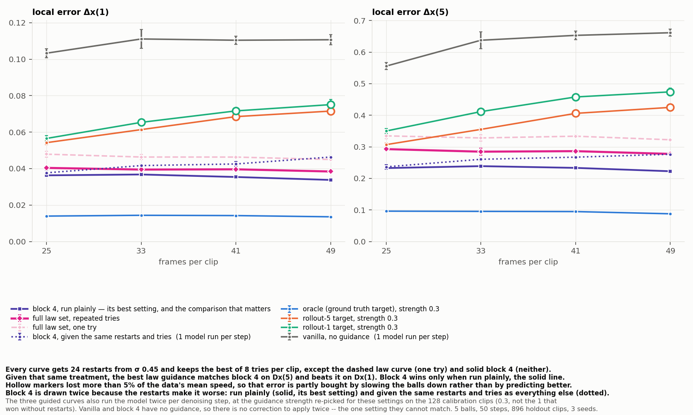
| Δx(5), 24 restarts + 8 tries for every method | 25f | 33f | 41f | 49f | 25→49 | keeps the data’s speed? |
|---|---|---|---|---|---|---|
| oracle (positive control) | 0.096 | 0.096 | 0.095 | 0.088 | 0.91× | every length |
| block 4 (autoregressive) | 0.237 | 0.261 | 0.267 | 0.276 | 1.17× | every length |
| full law set, repeated tries — the best we found | 0.293 | 0.285 | 0.286 | 0.278 | 0.95× | every length |
| full law set, one try per clip | 0.335 | 0.328 | 0.334 | 0.322 | 0.96× | every length |
| geometry laws only (superseded) | 0.365 | 0.387 | 0.391 | 0.388 | 1.06× | every length |
| rollout-5 target | 0.307 | 0.355 | 0.406 | 0.425 | 1.38× | no, from 41 frames |
| rollout-1 target | 0.350 | 0.412 | 0.458 | 0.474 | 1.35× | no, from 33 frames |
| vanilla | 0.556 | 0.638 | 0.653 | 0.661 | 1.19× | every length |
| block 4 run plainly, no restarts and no tries | 0.233 | 0.239 | 0.233 | 0.223 | 0.96× | every length |
896 holdout clips, mean over 3 seeds. Speed is the mean ball speed measured from the generated positions, divided by the truth’s; a method that slows every ball down lowers the local error without predicting better, so a value below 0.95 disqualifies the number.
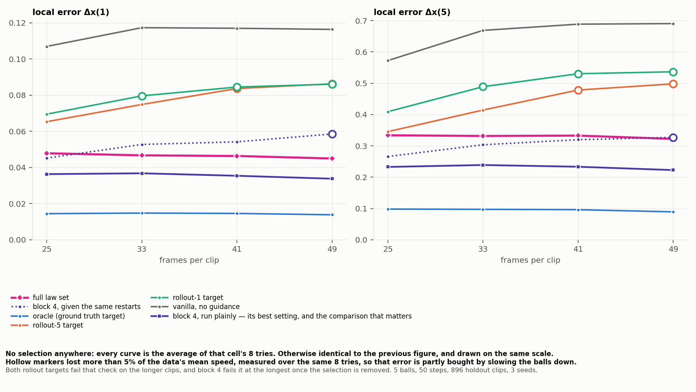
Removing the selection costs every method something, and it costs them similar amounts, so the ordering barely moves. The full law set and block 4 given the same restarts still finish level on the longest clips, and block 4 run plainly is still clearly ahead of both. What the selection was worth is the gap between each pair of lines across the two figures, and no method gains a decisive advantage from it.
One thing does change. Block 4 given the restarts now fails the speed check at the longest clip length, which it passed when the critic was choosing for it. Picking the best of eight was partly repairing the damage the restarts do to it — more evidence that the restarts are the wrong setting for that model, and that its plain run is the number worth comparing against.
At every denoising step the model produces its current guess at the finished clip. Ten laws are evaluated on that guess, each one an equation the true motion satisfies exactly, and the guess is nudged toward satisfying them. Nothing simulates the motion forward at any point.
Write \(p_t^b\) and \(v_t^b\) for the position and velocity of ball \(b\) at frame \(t\) in the current guess, \(\Delta t\) for the frame interval, \(r\) for the ball radius, and \(\rho_t^{ij} = p_t^i - p_t^j\) for the vector between a pair of balls. Every law is written on one interval, from frame \(t-1\) to frame \(t\), and averaged over balls or pairs and over the generated frames.
A law about free flight must not be applied to a ball that just collided, and a law about collisions must not be applied to a ball that did not. Neither is known, so both are estimated from the guess itself. For a pair, three distances are computed: the closest approach if both balls fly freely forward from \(t-1\), the closest approach flying backward from \(t\), and the closest approach of the straight segment joining the two frames. Taking the smallest, \(d^{ij}\), a soft indicator of contact is
and the chance that ball \(b\) touched nothing in the interval is \(\phi^b = \prod_{j \neq b}\left(1 - s^{bj}\right)\). The free-flight laws are weighted by \(\phi^b\), the collision laws by \(s^{ij}\). The margin \(m\) is set wider for the free-flight laws than for the collision laws, so that a collision the indicator underestimates does not leave a free-flight law fighting it.
Geometry, which holds at every frame regardless of what happened:
Free flight, for a ball the indicator says touched nothing. Let \(q = p_{t-1}^b + v_{t-1}^b \Delta t\), mirrored once about a wall if it lands outside, and \(\tilde v = -v_{t-1}^b\) if it was mirrored and \(v_{t-1}^b\) otherwise:
Collisions, for a pair the indicator says touched. Write \(V = v^i + v^j\) for the pair’s total velocity and \(E = \lVert v^i\rVert^2 + \lVert v^j\rVert^2\) for its energy:
The last two need the contact normal. Flying both balls freely forward from \(t-1\), let \(s_c \in (0,1)\) be the fraction of the interval at which their separation first reaches \(2r\), \(\rho_c\) the relative position there, and \(n = \rho_c / \lVert \rho_c \rVert\). For equal masses an elastic collision reflects the relative velocity about \(n\), giving \(\hat u = u_{t-1} - 2(u_{t-1}\!\cdot n)\,n\) where \(u = v^i - v^j\):
As written, every residual above shrinks if the balls simply move less. A guidance that slows everything down therefore lowers the loss without predicting anything better, and that is what an earlier law set did. So each residual is divided by how fast the balls are currently moving — \(\lVert v_{t-1}^b \rVert + \varepsilon\) for a single ball, the sum of both speeds for a pair — squared to match the residual. Scaling every velocity in the clip by a constant now leaves the loss unchanged, so slowing down buys nothing.
The laws are not summed into one loss and differentiated once. Each law’s gradient with respect to the current guess is taken separately, and each gets its own step, because the gradients differ in scale by orders of magnitude: a law that is already satisfied almost everywhere touches a handful of numbers per frame, and adding it to a dense one would bury it. For a law taking a bounded step, the gradient is divided by its own largest element and scaled by that law’s weight, so no law can move any single number by more than its share. For the rest, the step is the exact minimiser along the gradient, which for a squared residual is
capped so one law cannot dominate a step. The per-law corrections are then added. This happens twice per denoising step.
Two things sit on top and are not guidance: the finished clip is partly re-noised and denoised again twenty-four times, and several clips are generated with three of the laws used to score them and the best kept. Both help any method, which is what the comparison below controls for.
The geometry law set looked far better than the rollout target, but the rollout target had been run without restarts or repeated tries. Give it both and almost all of that difference disappears. Those two settings help any guidance, and they help the unguided model most of all. The full law set does open a genuine gap over the rollout target, and that gap comes from the laws, because both methods now get the same sampling.
On the shortest clips the rollout target is ahead of the best law set, and its samples still move at the right speed there, so that lead is real. The law set takes over on longer clips. On the two longest, the rollout target has started slowing the balls down, so its numbers there do not count at all.
The best law set’s error is the same at the longest clip length as at the shortest, and slightly lower. Every other guided method gets worse as clips lengthen, and so does block 4 once it is given the restarts. The law set also keeps the data’s speed at every length, so this is not the slow-sample effect. It behaves the same way with a single try as with repeated tries, so it comes from the laws and not from picking the best of several clips.
On the longest clips the best law set and block 4 reach the same five-step error, within the spread across training seeds, and the law set is ahead on the one-step error. The two cross: block 4 leads on short clips and loses that lead on long ones, because the restarts make block 4 worse as clips lengthen while the law set holds steady.
That tie depends on holding block 4 to settings that damage it. A restart re-noises a finished clip and regenerates it block by block, which breaks the agreement between neighbouring blocks that makes block 4 work. Run without restarts it is ahead on both errors, and the law-guided model cannot match it there because it needs the restarts to reach its own best result. So: equalise the sampling and the two tie; let each method use the settings that suit it and generating in order still wins.
The first law set, the one with the differentiable simulator, appeared to get better on longer clips. Its balls also move progressively slower than real ones as clips lengthen. The error measures how far a ball has drifted from where it should be, and a slower ball drifts less, so the error falls without the prediction improving. That curve is not evidence of anything and is no longer plotted.
The plausibility measures from earlier, recomputed on the trajectories both law sets produced:
| 49 frames | truth | vanilla | rollout-5 | oracle | block 4 | laws + rollouts | laws only |
|---|---|---|---|---|---|---|---|
| Δx(5) | 0 | 0.888 | 0.639 | 0.188 | 0.223 | 0.317 | 0.388 |
| frames with overlapping balls | 0 | 0.140 | 0.071 | 0.004 | 0.008 | 0.000 | 0.000 |
| collision-law residual, ball–ball | 0 | 0.706 | 0.576 | 0.130 | 0.229 | 0.293 | 0.335 |
| phantom velocity changes | 0 | 0.067 | 0.136 | 0.017 | 0.014 | 0.082 | 0.035 |
| final energy | 1.00 | 0.95 | 0.47 | 0.98 | 0.98 | 0.54 | 0.95 |
| ball–ball collisions per clip | 15.1 | 25.0 | 15.4 | 15.1 | 14.7 | 5.5 | 11.1 |
| W1 distance, speeds | 0 | 0.23 | 1.72 | 0.06 | 0.11 | 1.66 | 0.21 |
| median frame of divergence | 49 | 13 | 15 | 49 | 18 | 13 | 13 |
The first law set gets part of its accuracy by avoiding collisions rather than by getting them right. Its clips contain roughly a third as many ball-to-ball collisions as real ones, and the balls lose half their energy. A collision that never happens cannot be resolved wrongly, so dodging them lowers the error without improving the physics.
The geometry law set does not cheat that way. It keeps as much energy as the unguided model, matches the real distribution of ball speeds, halves the unguided model’s unexplained velocity changes, never overlaps two balls, and halves its collision-law error. It still collides less often than real clips, which is its one remaining defect — milder than the first law set’s, and absent from the rollout target, which gets the collision rate right.
Neither law set improves the global error. Both produce a physically consistent future rather than the true one. Block 4 is still the only method that is accurate, keeps its energy and collides as often as real clips, all at the same time.
Cost and data
882 runs for the main grid, ablations and strength sweep on one node of RTX PRO 6000 GPUs, 48 at a time: about 40 minutes wall, 10–20 s per unguided or oracle run and 40–150 s per rollout run, where the simulator in a 16-process pool dominates. The physics-law search added 239 runs over eight iterations, 20 s for single laws to 17 min for the final configuration with 16 restarts, plus about 40 CPU screens on 64 clips. The whole-trajectory distribution comparison is 72 cells, about 35 minutes on 40 CPUs and no GPU.
The selected strengths and aggregated metrics, every individual run, and the two evaluation suites.
{kind=link}
{kind=link}
{kind=link}
{kind=link}
{kind=link}
{kind=link}
{kind=link}
{kind=link}
{kind=link}
{kind=link}
{kind=link}
{kind=link}
{kind=link}
{kind=link}
{kind=link}
{kind=link}
{kind=link}
{kind=link}
{kind=link}
{kind=link}
{kind=link}
{kind=link}
{kind=link}
{kind=link}
{kind=link}
{kind=link}
{kind=link}
{kind=link}
{kind=link}
{kind=link}
{kind=link}
{kind=link}
{kind=link}
{kind=link}
{kind=link}
{kind=link}
{kind=link}